인간의 시각 시스템은 불가사의하다.
아래에 있는 손글씨를 한번 보자.

대부분의 사람은 아무런 노력 없이 숫자가 504192라는 사실을 알 수 있다.
너무 쉬워서 장난하는 것처럼 느껴질 수도 있다.
인간의 좌뇌와 우뇌에는 V1이라 부르는 일차 시각 피질primary visual cortex이 있다.
14억 개의 뉴런이 일차 시각 피질을 구성하고 있으며, 뉴런 사이에는 수십억 개의 연결 통로가 존재한다.
V1뿐만 아니라 V2와 V3, V4, V5와 같은 일련의 피질이 시각 시스템을 구성해 더 복잡한 이미지를 처리한다.
인간은 시각적인 세상을 이해하기 위해 수억 년에 걸쳐 진화한 슈퍼컴퓨터를 머리에 지니고 다니는 셈이다.
컴퓨터가 손글씨 숫자를 인식하는 것은 어려운 일이지만, 인간은 눈으로 본 것을 놀라울 정도로 잘 이해한다.
그리고 거의 모든 과정은 무의식적으로 일어나서 우리는 시각 시스템이 얼마나 어려운 문제를 푸는지 가늠하기조차 어렵다.
숫자를 인식하는 컴퓨터 프로그램을 작성할 때, 시각적인 패턴 인식의 어려움은 명백해진다. 눈으로 보고 이해할 때는 그렇게 쉬웠던 문제가 갑자기 어렵게 다가온다. 모양을 인식하는 방법을 다음과 같이 생각해보자 - "숫자 9는 위에 고리가 있고, 오른쪽에 수직선이 있다." 이러한 방식으로 알고리즘을 작성하는 것은 쉽지 않다. 위와 같은 규칙들을 정확하게 만들려고 하면 할수록 수많은 예외의 늪에 빠진다. 이는 정말 절망적인 상황이다.
뉴럴 네트워크neural network는 다른 방식으로 문제에 접근한다.
학습 데이터training examples라 부르는 수많은 손글씨 숫자를 학습할 수 있는 시스템이 뉴럴 네트워크의 기본적인 아이디어다.

다시 말해 뉴럴 네트워크는 데이터를 활용하여 손글씨를 인식하는 규칙을 스스로 추론한다.
게다가 뉴럴 네트워크는 학습 데이터 세트의 수가 많으면 많을수록 손글씨를 많이 학습할 수 있으며, 그에 따라 정확도는 높아진다.
위 그림에는 100개의 학습 데이터가 있지만, 학습 데이터를 수천 개 혹은 수백만 개로 늘리면 더 좋은 손글씨 인식기를 만들 수 있다.
1장에서는 손글씨 숫자를 학습하여 인식하는 뉴럴 네트워크 프로그램을 구현해본다. 프로그램의 코드는 단 74줄이며, 뉴럴 네트워크와 관련된 다른 라이브러리는 사용하지 않는다. 짧은 프로그램이지만 손글씨 숫자 인식의 정확도는 96%에 달하며, 인간이 개입할 필요가 없다. 책의 뒷부분에서는 정확도가 99%를 넘는 인식기를 만들어 본다. 실제 상업적으로 이용하는 뉴럴 네트워크의 성능은 아주 좋아서, 은행과 우체국에서는 뉴럴 네트워크를 이용해 수표를 처리하고 주소를 인식한다.
뉴럴 네트워크를 이해하는데 좋은 예제 중 하나인 손글씨 인식 문제를 집중적으로 살펴본다. 손글씨 숫자 인식 문제가 쉬운 것은 아니지만, 그렇다고 복잡한 해결책을 필요로 하거나 엄청난 계산 능력을 요구하는 것도 아니다. 게다가 딥러닝deep learning 같은 심화된 기술을 적용하고 이해할 수 있는 좋은 예제이다. 그래서 책 전반에 걸쳐 손글씨 인식 문제를 주로 다룬다. 책의 뒷부분에서 손글씨를 인식하는 아이디어가 컴퓨터 비전과 음성 인식, 자연어 처리와 같은 다른 분야의 문제에 어떻게 적용되는지 살펴본다.
1장에서는 손글씨 숫자를 인식하는 프로그램 작성 방법에 대해서만 다루었다면 내용은 훨씬 짧았을 것이지만, 그 과정에서 얻을 수 있는 뉴럴 네트워크에 대한 핵심 아이디어를 살펴본다. 중요한 두 가지 인공 뉴런인 퍼셉트론perceptron과 시그모이드sigmoid 뉴런 그리고 뉴럴 네트워크에 대한 표준 학습 알고리즘인 확률적 경사 하강법에 대해 알아본다. 전반적으로 핵심 아이디어가 왜 그런 방식으로 동작하는지 설명하고, 뉴럴 네트워크에 대한 직관력을 키우는데 초점을 맞춘다. 기본적인 동작 원리만 설명하는 것보다 설명이 길어질 수 있지만 심도있게 이해할 가치가 충분히 있다. 1장의 끝부분에 도달하면 딥러닝이 무엇인지, 왜 중요한지 이해할 수 있다.
뉴럴 네트워크란 무엇일까? 먼저 인공 뉴런의 한 종류인 퍼셉트론 perceptron에 대해 알아보자. 1950년대와 1960년대에 과학자 프랭크 로젠블랫Frank Rosenblatt은 워렌 맥컬로치Warren McCulloch와 월터 피츠Walter Pitts의 논문에 영감을 받아 퍼셉트론을 고안했다. 최근에는 퍼셉트론이 아닌 다른 인공 뉴런 모델을 더 많이 사용한다. 뉴럴 네트워크에 관한 최근의 논문과 이 책에서 주로 사용하는 뉴런 모델은 시그모이드 뉴런 sigmoid neuron이다. 시그모이드 뉴런을 공부하기에 앞서 퍼셉트론을 이해할 필요가 있다.
그렇다면 퍼셉트론은 어떻게 동작할까?
퍼셉트론은 여러 개의 이진 입력 $x_1, x_2, \ldots$을 받아 하나의 이진 값을 출력한다.
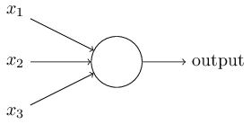
위의 그림에서 퍼셉트론은 세 개의 변수 $x_1, x_2, x_3$을 입력받는다.
일반적으로 입력의 개수는 더 많을수도 있고 더 적을수도 있다.
로젠블랫은 출력을 계산하는 간단한 규칙을 제안했다.
로젠블랫은 출력에 대한 각 입력의 중요성을 나타내는 실숫값real number 가중치 weight $w_1,w_2,\ldots$를 도입했다.
뉴런은 가중합wegithed sum $\sum_j w_j x_j$ 이 역치 threshold value보다 큰지 작은지에 따라 0 또는 1을 출력한다.
가중치와 마찬가지로 역치는 실숫값이며 뉴런의 파라미터parameter이다.
수학적으로 정확하게 표현하면 아래와 같다.
$$\begin{eqnarray}
\mbox{output} & = & \left\{ \begin{array}{ll}
0 & \mbox{if } \sum_j w_j x_j \leq \mbox{ threshold} \\
1 & \mbox{if } \sum_j w_j x_j > \mbox{ threshold}
\end{array} \right.
\tag{1}\end{eqnarray}$$
이것이 바로 퍼셉트론이 동작하는 방식이다.
퍼셉트론은 간단한 수학 모델이며 입력에 가중치를 매겨 결정을 내리는 장치이다. 예를 들어 보자. 현실적이지는 않지만 이해하기 쉬운 예를 먼저 살펴보고 나중에 조금 더 현실적인 예를 다루어 보자. 다가오는 주말에 당신이 사는 곳에서 치즈 페스티벌이 열린다고 가정하자. 당신은 치즈를 좋아하기 때문에 세 가지 요소를 가늠하여 페스티벌에 갈지 말지 결정해야 한다.
이제 구체적으로 살펴보자. 당신이 치즈를 정말 좋아한다고 가정하자. 당신이 치즈를 좋아해서 이성 친구가 함께 가지 않아도, 대중교통을 이용해서 가기 어려워도 페스티벌에 가고 싶어 한다고 가정해보자. 하지만 당신은 날씨에 민감하여 날씨가 좋지 않으면 페스티벌에 가지 않는다고 가정하자. 이런 종류의 의사 결정을 모델링하기 위해 퍼셉트론을 이용할 수 있다. 날씨에 대한 가중치 $w_1 = 6$으로 설정하고, 다른 조건에 대한 가중치를 각각 $w_2 = 2, w_3 = 2$로 설정하여 모델링한다. 가중치 $w_1$의 값이 커질수록 당신에게 이성 친구의 동행 여부나 대중교통의 편리성보다 날씨가 중요해진다. 마지막으로 퍼셉트론에 대한 역치를 $5$로 가정하자. 이렇게 가중치를 선택하면 날씨가 좋은 경우 퍼셉트론의 출력은 1이 되고 날씨가 나쁜 경우 출력은 0이 된다. 이는 우리가 원하는 의사 결정 모델을 구현하는 퍼셉트론이다. 이성 친구의 동행 여부와 대중교통의 편리성은 출력에 영향을 주지 않는다.
가중치와 역치를 바꿔서 다른 의사 결정 모델을 만들 수도 있다. 예를 들어 역치가 3이라고 가정하자. 그러면 날씨가 좋을 때 페스티벌에 가는 경우와 이성 친구가 함께 가고 대중교통이 가까이 있는 경우에 페스티벌에 가야 하는 퍼셉트론이 된다. 즉 다른 의사 결정 모델이 된다. 역치가 낮으면 페스티벌에 가는 경우는 더 많아진다.
하지만 분명한 것은 퍼셉트론이 완전한 의사 결정 모델은 아니라는 점이다.
예시에서 보여주고자 한 것은 퍼셉트론이 의사 결정을 하기 위해 서로 다른 요소에 가중치를 매기는 방식이다.
그래도 복잡한 퍼셉트론 네트워크는 섬세한 의사 결정을 할 수 있을것 같아 보인다.
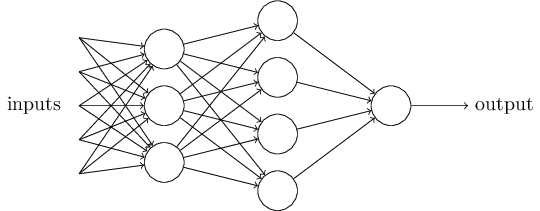
위의 네트워크에서 첫 번째 퍼셉트론 열column을 첫 번째 층 layer이라 부른다.
네트워크에서 퍼셉트론의 첫 번째 열은 입력을 고려하여 세 개의 결정을 내린다.
퍼셉트론의 두 번째 층은 어떨까?
두 번째 층에 있는 각각의 퍼셉트론은 첫 번째 층의 의사결정 결과를 고려하여 결정을 내린다.
이런 방식으로 두 번째 층에 있는 퍼셉트론은 첫 번째 층에 있는 퍼셉트론보다 더 복잡하고 추상적인 결정을 할 수 있다.
그리고 훨씬 더 복잡한 결정은 세 번째 층에 있는 퍼셉트론이 한다.
이러한 방식으로 다층 퍼셉트론 네트워크는 수준 높은 의사 결정에 참여할 수 있다.
하나의 퍼셉트론은 하나의 출력을 가진다고 정의했다. 위의 그림에 나타난 퍼셉트론 네트워크는 여러 개의 출력을 가지는 것처럼 보인다. 하지만 사실 위의 퍼셉트론도 하나의 출력을 가진다. 여러 개의 출력 화살표를 사용한 이유는 단지 하나의 퍼셉트론 출력이 여러 개의 다른 퍼셉트론의 입력으로 사용될 수 있다는 것을 보이기 위함이다. 하나의 화살표가 여러 개로 나누어 지는 것보다 간단하고 편한 방법이다.
퍼셉트론에 대한 식을 간단히 나타내보자. 조건 $\sum_j w_j x_j > \mbox{threshold}$을 간단하게 나타내기 위해 표기법 상에 두 가지 변화를 주자. 먼저 $\sum_j w_j x_j$을 내적dot product으로 표현하자. 내적으로 표현하면 $w \cdot x \equiv \sum_j w_j x_j$이고 여기서 $w$와 $x$은 벡터이며 성분은 각각 가중치와 입력이다. 두 번째로 역치를 부등식의 좌변으로 옮겨 퍼셉트론의 편향bias $b \equiv -\mbox{threshold}$으로 치환하자. 역치 대신에 편향을 사용해서 퍼셉트론 규칙을 다시 쓰면 다음과 같다. $$\begin{eqnarray} \mbox{output} = \left\{ \begin{array}{ll} 0 & \mbox{if } w\cdot x + b \leq 0 \\ 1 & \mbox{if } w\cdot x + b > 0 \end{array} \right. \tag{2}\end{eqnarray}$$ 그러면 편향을 퍼셉트론의 출력이 1이 되기 쉬운 정도로 생각할 수 있다. 또는 생물학적인 용어를 사용하여 편향을 퍼셉트론이 활성화fire되기에 얼마나 쉬운지로 이해할 수 있다. 퍼셉트론이 큰 편향을 가지면 퍼셉트론의 출력은 1이 되기 쉽다. 하지만 편향이 매우 작은 음수인 경우 퍼셉트론의 출력은 1이 되기 매우 어렵다. 퍼셉트론을 표현하는데 편향을 도입한 것은 아주 사소한 변화이지만 나중에 표기의 단순함을 이끌어 낼 것이다. 이로 인해 책의 나머지 부분에서는 역치를 사용하지 않고 편향을 사용한다.
퍼셉트론은 결정을 내리기 위해 입력evidence에 가중치를 매겨 가늠하는 방법이다.
퍼셉트론을 이용하면 AND, OR, NANd와 같은 기초적인 논리 함수도 계산할 수 있다.
예를 들어, 두 개의 입력을 가지고 가중치가 각각 $-2$이고 편향이 $3$인 퍼셉트론이 있다고 가정하자.
퍼셉트론을 그려보면 아래와 같다.
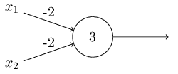
입력이 $00$이면 $(-2)*0+(-2)*0+3 = 3$이 되고 양수이므로 출력은 $1$이다.
여기서 $*$기호는 곱셈을 나타낸다.
비슷한 방법으로 입력이 $01$이나 $10$이면 출력은 $1$이다.
하지만 입력이 $11$인 경우 $(-2)*1+(-2)*1+3 = -1$은 음수이므로 출력은 $0$이다.
그러면 이 퍼셉트론은 NAND 게이트가 된다.
NAND 게이트 예시를 통해 퍼셉트론을 이용한 간단한 논리 함수 계산을 보았다.
사실 퍼셉트론 네트워크를 이용하면 어떤 논리 함수도 구현할 수 있다.
NAND 게이트는 범용 게이트universal gate이므로 어떠한 계산도 NAND 게이트를 통해 할 수 있다.
예를 들어, NAND 게이트를 이용해서 두 개의 비트bit $x_1, x_2$를 더하는 회로를 만들어 보자.
이는 비트 합bitwise sum $x_1 \oplus x_2$을 계산해야하며, $x_1$과 $x_2$가 모두 1일 때 1이 되는 자리 올림 비트carry bit가 필요다.
자리 올림 비트는 비트 곱bitwise product $x_1 x_2$으로 쓸 수 있다.
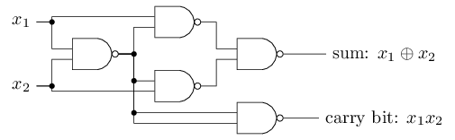
모든 NAND 게이트를 퍼셉트론으로 치환하면 동등한 퍼셉트론 네트워크를 구할 수 있다.
각 퍼셉트론은 두 개의 입력을 가지고 가중치는 $-2$이며 전체 편향은 $3$이다.
아래에 퍼셉트론 네트워크가 나타나 있다.
도표에서 오른쪽 아래의 NAND 게이트 위치와 상응하는 퍼셉트론을 조금 옮겨 그려 화살표를 쉽게 그렸다.
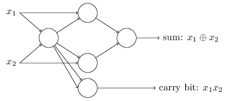
위에 나타난 퍼셉트론 네트워크에서 주목할 만한 점은 가장 왼쪽에 있는 퍼셉트론의 출력이 가장 아래 있는 퍼셉트론의 입력에 두 번 사용된다는 점이다.
퍼셉트론을 정의할 때 출력 두 개가 중복으로 같은 입력에 사용될 수 있는지 설명하지 않았다.
사실 그렇게 중요한 문제는 아니다.
두 개의 출력선 각각은 가중치 $-2$를 가지기 때문에 두 개의 출력선을 하나로 합쳐 나타낸 뒤 가중치를 $-4$로 나타낼 수 있다.
퍼셉트론 네트워크를 아래처럼 다시 그릴 수 있다.
하나의 가중치 $-4$는 표시하였고 표시하지 않은 가중치는 $-2$이다.
편향은 모두 $3$이다.
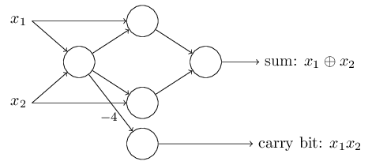
지금까지 입력 변수 $x_1, x_2$를 퍼셉트론 네트워크 왼편에 표시했다.
사실 입력을 인코딩하는 입력 층 input layer을 그리는 것이 관습이다.
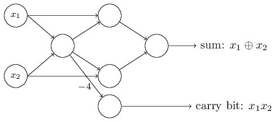
입력 퍼셉트론에 대한 표기법으로 출력은 나타내고 입력은 표시하지 않아도 된다.
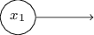
입력이 없는 퍼셉트론이라고 생각해서는 안된다.
입력이 없는 퍼셉트론이라고 가정하면 가중치 합 $\sum_j w_j x_j$은 항상 0이 된다.
그러면 출력은 $b > 0$이면 1이 되고, $b \leq 0$이면 0이 된다.
즉 이 퍼셉트론의 출력은 고정된 값을 가지고, 원하는 출력 값(위 예에서 $x_1$)을 얻을 수 없다.
입력 퍼셉트론은 퍼셉트론이 아니라 원하는 출력 값 $x_1, x_2,\ldots$을 가지는 특별한 단위로 생각하면 된다.
덧셈기adder 예제는 많은 수의 NAND 게이트를 포함한 회로에 퍼셉트론 네트워크를 어떻게 사용할 수 있는지 보여준다. 그리고 NAND 게이트는 범용 게이트이므로 퍼셉트론 또한 범용적으로 사용할 수 있다.
퍼셉트론이 계산 범용성computational universality을 가진다는 사실이 좋은 점도 있고 나쁜 점도 있다. 먼저 좋은 점은 퍼셉트론 네트워크가 어떤 계산 장치보다 강력한 기능을 할 수 있다는 것이다. 하지만 퍼셉트론이 단시 새로운 형태의 NAND 게이트라는 점은 실망스러운 점이다. 이는 전혀 새롭지 않은 사실이다.
하지만 이러한 관점이 제안하는 것보다 상황은 더 나아졌다. 학습 알고리즘 learning algorithm을 창안해 인공 뉴런 네트워크의 가중치와 편향 값을 자동으로 조정하는 있다는 사실이 밝혀졌다. 이러한 조정은 프로그래머의 직접적인 개입이 아닌 외부 자극에 대한 반응으로 일어난다. 학습 알고리즘 덕분에 우리는 인공 뉴런을 전통적인 논리 게이트와 다른 방식으로 사용할 수 있다. NAND 게이트나 다른 게이트를 사용한 회로와 달리 뉴럴 네트워크는 학습을 하여 문제를 풀 수 있다. 때로는 회로로 직접 설계하기 어려운 문제도 풀 수 있다.
학습 알고리즘은 굉장히 훌륭하다.
하지만 어떻게 뉴럴 네트워크에 대한 학습 알고리즘을 설계할 수 있을까?
문제를 풀기 위해 학습을 하는 퍼셉트론 네트워크가 있다고 가정해보자.
예를 들어 네트워크에 대한 입력은 손글씨 숫자 이미지를 스캔해서 얻어 가공하지 않은 픽셀 데이터라고 하자.
그리고 우리는 네트워크가 가중치와 편향을 학습하여 숫자를 올바르게 분류한 결과를 출력하고자 한다.
네트워크의 가중치 혹은 편향을 조금씩 바꾸면서 어떻게 학습 과정이 일어나는지 살펴보자.
가중치를 조금씩 변화시켜 네트워크 출력을 조금씩 바뀌도록 만들고자 한다.
잠시 후 알게 되겠지만 이러한 속성 때문에 학습이 가능하다.
도표로 나타내면 아래와 같다.(아래 네트워크는 너무 단순하여 손글씨를 인식하지는 못한다)
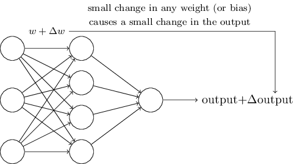
가중치(또는 편향)가 조금 변할 때 출력도 조금 변한다면 우리는 이 사실을 이용해 가중치와 편향을 수정하여 네트워크를 우리가 원하는 방식으로 동작하도록 만들 수 있다.
예를 들어 네트워크가 숫자 "9" 이미지를 숫자 "8"로 잘못 인식한다고 가정해보자.
그러면 우리는 네트워크가 입력된 이미지를 숫자 "9"로 분류하도록 가중치와 편향을 어떻게 조금씩 바꿀지 알아낼 수 있을 것이다.
더 좋은 결과를 얻도록 가중치와 편향을 반복해서 바꾸어 나가면 된다.
이렇게 네트워크는 학습을 진행한다.
퍼셉트론으로 구성된 네트워크에서는 학습 과정이 일어나지 않는다는 것이 문제이다. 사실 어떤 하나의 퍼셉트론에서 가중치 혹은 편향이 조금 변할 때 출력은 0에서 1로 혹은 반대로 완전히 뒤집어 지는 경우가 있다. 출력이 완전히 뒤바뀌면 네트워크의 나머지 부분도 복잡한 방식으로 완전히 바뀐다. 그래서 숫자 "9"는 이제 정확히 분류할 수 있더라도 다른 이미지들의 분류 결과는 통제할 수 없을 정도로 완전히 바뀔 수 있다. 이러한 이유 때문에 네트워크가 원하는 행동을 하도록 얼마만큼 가중치와 편향을 수정해야 하는지 알기 어렵다. 아마도 이 문제를 해결하는 현명한 방법이 있을 것이다. 하지만 이러한 퍼셉트론 네트워크, 즉 학습하는 퍼셉트론 네트워크를 어떻게 얻을 수 있는지 분명하지 않다.
시그모이드 sigmoid 뉴런이라는 새로운 형태의 인공 뉴런을 도입해서 이 문제를 해결할 수 잇다. 시그모이드 뉴런은 퍼셉트론과 비슷하지만 가중치와 편향이 조금 변할 때 출력도 조금 변한다. 그래서 시그모이드 뉴런은 학습을 할 수 있다.
이제 시그모이드 뉴런에 대해 알아보자.
퍼셉트론을 그렸던 방식처럼 시그모이드 뉴런을 그려보자.
퍼셉트론에서처럼 시그모이드 뉴런은 입력 $x_1, x_2, \ldots$을 가진다.
입력 값은 $0$ 또는 $1$이 아니라 $0$과 $1$ 사이의 값을 가질 수 있다.
예를 들어 $0.638\ldots$ 같은 값은 시그모이드 뉴런의 입력이 될 수 있다.
또한 퍼셉트론과 같이 시그모이드 뉴런도 각 입력에 대한 가중치 $w_1, w_2, \ldots$와 전체 편향 $b$를 가진다.
하지만 출력은 $0$ 또는 $1$이 아니라 $\sigma(w \cdot x+b)$이다.
여기서 $\sigma$는 시그모이드 함수 sigmoid function*
$\sigma$는 로지스틱 함수라고도 부르고,
이때의 뉴런을 로지스틱 뉴런이라 한다.
이 용어를 기억해두면 유용하다.
뉴럴 네트워크를 이용하는 많은 사람이 이 용어를 사용하기 때문이다.
하지만 이 책에서는 시그모이드라는 용어를 사용한다.
라 부르고 다음과 같이 정의한다.
$$\begin{eqnarray}
\sigma(z) \equiv \frac{1}{1+e^{-z}}.
\tag{3}\end{eqnarray}$$
식을 조금 더 자세히 써보자.
입력은 $x_1,x_2,\ldots$이고, 가중치는 $w_1,w_2,\ldots$, 편향은 $b$일 때 시그모이드 뉴런의 출력은 다음과 같다.
$$\begin{eqnarray}
\frac{1}{1+\exp(-\sum_j w_j x_j-b)}.
\tag{4}\end{eqnarray}$$
한 눈에 보면 시그모이드 뉴런은 퍼셉트론과 매우 차이가 나는 것처럼 보인다.
시그모이드 함수의 수학식algebraic form에 익숙하지 않으면 이해하기 어렵고 거부감이 들 수 있다.
사실 퍼셉트론과 시그모이드 뉴런 사이에는 비슷한 점이 많다.
시그모이드 함수의 수학식을 이해하기 어렵지만 수학식에서 기술적인 사실을 보다 자세히 알 수 있다.
퍼셉트론 모델과 비슷한 점을 이해하기 위해 $z \equiv w \cdot x + b$은 매우 큰 양수라고 가정해보자. 그러면 $e^{-z} \approx 0$이 되고 $\sigma(z) \approx 1$이 된다. 즉 $z = w \cdot x+b$이 매우 큰 양수일 때 시그모이드 뉴런의 출력은 대략 1이 된다. 퍼셉트론의 경우에도 결과는 같다. $z = w \cdot x+b$이 매우 작은 음수라고 가정해보자. 그러면 $e^{-z} \rightarrow \infty$이고 $\sigma(z) \approx 0$이 된다. 그래서 $z = w \cdot x+b$이 매우 작은 음수일 때 시그모이드 뉴런은 대략적으로 퍼셉트론과 비슷한 행동을 보인다. 단지 $w \cdot x+b$이 적당한 값을 가질 때만 퍼셉트론 모델과 차이를 보인다.
$\sigma$의 수학식을 어떻게 이해할 수 있을까?
사실 $\sigma$의 수학식 자체는 크게 중요하지 않다.
함수를 그래프로 나타냈을 때의 모양이 중요하다.
아래 시그모이드 함수 그래프가 있다.
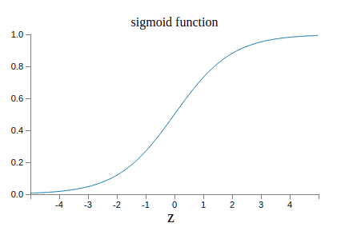
아래의 그래프는 계단 함수step function의 그래프이다.
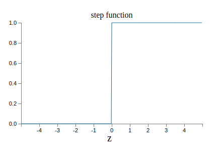
$\sigma$가 계단 함수라면 시그모이드 뉴런은 $w\cdot x+b$이 양수인지 음수인지*
사실 $w \cdot x +b = 0$일 때 퍼셉트론의 출력은 $0$이고,
계단 함수의 출력은 $1$이다.
그래서 엄밀히 따지자면 계단 함수를 수정해야 하지만
아이디어를 얻을 수 있다.
에 따라 출력은 1 또는 0이 되므로 퍼셉트론이 된다.
$\sigma$ 함수를 사용하여 우리는 위에서 살펴본 퍼셉트론을 얻을 수 있다.
실제로 $\sigma$ 함수의 수학식보다 부드러운 곡선 형태의 모양이 훨씬 중요하다.
$\sigma$ 함수의 부드러운 곡선 형태는 뉴런에서 가중치의 매우 작은 변화 $\Delta w_j$와 편향의 매우 작은 변화 $\Delta b$가 출력을 $\Delta \mbox{output}$만큼 매우 작게 변화시킬 수 있다는 의미이다.
사실 미분을 이용하면 $\Delta \mbox{output}$을 다음과 같이 쓸 수 있다.
$$\begin{eqnarray}
\Delta \mbox{output} \approx \sum_j \frac{\partial \, \mbox{output}}{\partial w_j}
\Delta w_j + \frac{\partial \, \mbox{output}}{\partial b} \Delta b,
\tag{5}\end{eqnarray}$$
여기서 시그마$\Sigma$는 모든 가중치 $w_j$에 대한 합이고, $\partial \, \mbox{output} / \partial w_j$과 $\partial \, \mbox{output} /\partial b$은 각각 $w_j$과 $b$에 대한 출력의 편미분partial derivative을 의미한다.
편미분을 몰라도 상관없다.
편미분 때문에 위 식이 복잡해 보이지만 사실 말하고자 하는 것은 아주 간단하다: $\Delta \mbox{output}$은 가중치와 편향에서의 매우 작은 변화 $\Delta w_j$와 $\Delta b$에 대한 선형 함수 linear function이다.
이러한 선형성linearity 때문에 출력에서 원하는 매우 작은 변화를 얻기 위해 가중치와 편향을 얼마만큼 변화시켜야 하는지 고르기 쉽다.
그러므로 시그모이드 뉴런은 퍼셉트론과 같은 성질qualitative을 가지고 행동하지만 가중치와 편향의 변화가 얼마만큼 출력을 변화시키는지 알아내기 쉽다.
$\sigma$ 함수의 수학식보다 그래프 모양이 중요하다면 방정식 (3) $$\begin{eqnarray} \sigma(z) \equiv \frac{1}{1+e^{-z}} \nonumber\end{eqnarray}$$ 과 같은 $\sigma$의 수학식을 사용하는 이유는 무엇일까? 사실 책의 뒷 부분에서 다른 활성화 함수 activation function $f(\cdot)$에 대한 출력이 $f(w \cdot x + b)$인 뉴런을 살펴볼 것이다. 다른 활성화 함수를 사용할 때 중요한 것은 방정식 (5) $$\begin{eqnarray} \Delta \mbox{output} \approx \sum_j \frac{\partial \, \mbox{output}}{\partial w_j} \Delta w_j + \frac{\partial \, \mbox{output}}{\partial b} \Delta b \nonumber\end{eqnarray}$$ 에서 나타나는 편미분 값의 변화이다. 지수함수의 미분은 몇몇 특성을 지니므로 편미분을 계산할 때 $\sigma$를 사용하면 계산을 간단히 할 수 있다. 어쨌든 $\sigma$는 뉴럴 네트워크에서 흔하게 사용되며 이 책의 대부분에서 사용되는 활성화 함수이다.
시그모이드 뉴런의 출력은 어떻게 해석하면 될까? 시그모이드 뉴런은 출력이 단지 0 또는 1이 아니라는 점에서 퍼셉트론과 큰 차이를 보인다. $0$과 $1$사이의 어떤 실숫값도 시그모이드 뉴런의 출력이 될 수 있다. 따라서 $0.173\ldots$과 $0.689\ldots$같은 값도 출력이 될 수 있다. 예를 들어 시그모이드 뉴런의 출력을 이용해서 뉴럴 네트워크의 입력 이미지 픽셀의 평균 명암도를 나타낼 수 있다. 하지만 이는 성가신 일일 수 있다. 네트워크의 출력으로 입력 이미지가 "9"인지 아닌지를 나타내고 싶다고 가정해보자. 분명히 퍼셉트론처럼 출력이 $0$ 또는 $1$이면 굉장히 쉽다. 하지만 실제로 시그모이드 뉴런에서 이를 다루기 위해서는 규칙을 정해야 한다. 예를 들어 출력이 $0.5$ 이상이면 "9"로 해석하고, 출력이 $0.5$ 보다 작으면 "9가 아니다"라고 해석해야 한다. 책에서는 혼란을 주지 않기 위해 이런 규칙을 명확히 정의해 놓았다.
퍼셉트론 네트워크에서 모든 가중치와 편향이 주어져 있고, 양수인 상수 $c > 0$로 가중치와 편향을 모두 곱한다고 가정하자. 네트워크의 행동이 변하지 않음을 보여라.
바로 위의 문제와 같은 조건, 즉 퍼셉트론 네트워크라고 가정하자. 또한 퍼셉트론에 대한 전체 입력이 주어져 있다고 가정하자. 실제 입력 값은 필요 없으며, 단지 입력이 고정되어 있다고 생각하자. 네트워크의 어떤 특정 퍼셉트론에서 입력 $x$에 대해 가중치와 편향은 $w \cdot x + b \neq 0$을 만족한다고 가정하자. 이제 네트워크에 있는 모든 퍼셉트론을 시그모이드 뉴런으로 치환하고 가중치와 편향을 양의 상수 $c > 0$으로 곱하자. 극한limit $c \rightarrow \infty$에서 시그모이드 뉴런 네트워크의 행동이 퍼셉트론 네트워크의 행동과 정확히 같음을 보여라. 하나의 퍼셉트론에 대해 $w \cdot x + b = 0$일 때 이는 왜 성립하지 않는가?
이번 절에서는 손 글씨 숫자 분류에서 성능이 좋은 뉴럴 네트워크를 소개하겠다.
먼저 네트워크의 서로 다른 부분을 부르는 용어에 대해 알아보자.
아래와 같은 네트워크가 있다고 가정하자.
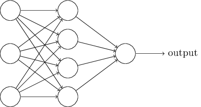
앞서 살펴본 것처럼 네트워크에서 가장 왼쪽에 있는 층을 입력 층이라 부른다.
입력 층에 있는 뉴런은 입력 뉴런 input neuron이라 한다.
가장 오른쪽에 있는 출력 output 층은 출력 뉴런 output neuron을 가진다.
위의 예에는 하나의 출력 뉴런이 있다.
가운데 있는 층은 은닉 층 hidden layer이라 한다.
은닉 층에 있는 뉴런은 입력도 아니고 출력도 아니기 때문이 이런 이름이 붙었다.
"은닉hidden"이라는 용어가 이상하게 들리지도 모른다.
나는(저자, Nielsen) 처음 이 용어를 들었을 때 어떤 심오한 철학이나 수학적으로 중요한 점이 있을 것이라 생각했다.
하지만 "입력도 아니고 출력도 아니다"라는 의미 이외에 다른 뜻은 없다.
위의 네트워크는 하나의 은닉 층을 가지고 있지만 어떤 네트워크는 다수의 은닉 층을 가진다.
예를 들어 아래와 같이 네 개 층으로 구성된 네트워크는 두 개의 은닉층을 가진다.

다소 헷갈릴 수 있지만 역사적인 이유 때문에 퍼셉트론이 아닌 시그모이드 뉴런으로 이루어진 다층 네트워크도 종종 다층 퍼셉트론multilayer perceptron 또는 MLPs라 부르기도 한다.
이 책에서는 다층 퍼셉트론이라는 말을 쓰지 않는다.
헷갈릴 수 있는 용어이기 때문이다.
하지만 이런 용어를 기억해 두자.
네트워크에서 입력 층과 출력 층의 설계는 직관적이다. 예를 들어 네트워크를 통해 손글씨 이미지가 "9"인지 아니지 결정한다고 가정하자. 이미지 픽셀의 명암을 입력 뉴런으로 인코딩encode하는 것이 네트워크를 설계하는 자연스러운 방법이다. 이미지가 $64 \times 64$ 그레이 스케일greyscale이라면 입력 뉴런은 $4,096 = 64 \times 64$개가 있어야 한다. 이때 입력 뉴런으로 입력되는 값은 $0$에서 $1$ 사이의 값으로 적절히 스케일된scaled 명암 값이다. 출력 층은 입력 이미지가 "9"일 경우 $0.5$보다 큰 값을 출력하고, "9"가 아닐 경우 $0.5$보다 작은 값을 출력하는 하나의 뉴런이다.
뉴럴 네트워크의 입력 층과 출력 층의 설계는 간단하지만 은닉 층을 설계할 때는 상당한 기술이 필요하다. 특히 은닉 층을 설계하는 과정을 간단한 규칙으로 설명하기 어렵다. 대신 뉴럴 네트워크를 연구하는 사람들은 은닉 층을 설계하는 과정에서 겪은 오래된 경험을 통해 설계 방법을 개발했다. 이를 통해 뉴럴 네트워크에서 원하는 행동을 이끌어 낼 수 있다. 예를 들어 이런 방법을 통해 은닉 층의 개수와 네트워크를 학습시키는 시간 사이에 균형을 유지할 수 있다. 이 책의 뒷부분에서 이러한 설계 방식에 대해 살펴보겠다.
지금까지 하나의 층에서 나온 출력이 다른 층의 입력으로 사용되는 뉴럴 네트워크에 대해 살펴보았다. 이러한 네트워크를 피드 포워드 feedforward 뉴럴 네트워크라고 부른다. 이는 네트워크에 루프loop가 없다는 의미이다. 즉 정보는 항상 앞으로 이동하며 뒤로 돌아오는 피드백feedback 과정은 없다. 네트워크에 루프가 있다면 $\sigma$ 함수의 입력이 출력에 따라 바뀌는 상황이 나타난다. 이는 이해하기 어려운 일이기 때문에 루프를 제외했다.
하지만 피드백 루프feedback loop가 존재하는 인공 뉴럴 네트워크 모델이 있다. 이러한 모델을 리커런트 뉴럴 네트워크recurrent neural network, RNN(순환신경망)라고 한다. 이 모델의 아이디어는 휴지 상태quiescent가 되기 전에 일정 시간 동안 활동 상태fire가 지속되는 뉴런이다. 뉴런이 활동전위에 도달하면 약간의 시간이 흐른 뒤 다른 뉴런도 자극한다. 그리고 시간이 지나면서 연속적으로 다른 뉴런들도 활동전위에 도달한다. 루프loop는 이러한 모델에서 아무런 문제도 일으키지 않는다. 뉴런의 출력이 즉시 입력에 영향을 주는 것이 아니라 약간의 시간이 지난 뒤 입력에 영향을 주기 때문이다.
RNN은 피드 포워드 네트워크보다 영향력이 크지 않다. RNN의 학습 알고리즘이 아직까지는 강력하지 않기 때문이다. 하지만 RNN은 피드 포워드 네트워크보다 인간의 두뇌가 동작하는 방식과 유사하다. 그리고 피드 포워드 네트워크에서는 풀기 어려운 문제를 RNN으로 풀 수 있다. 그렇지만 이 책에서는 범위를 제한하여 더 많이 사용되는 피드 포워드 네트워크를 집중적으로 다룬다.
뉴럴 네트워크를 정의했으니 다시 손글씨 인식 문제로 돌아가 보자.
손글씨 숫자 인식 문제를 두 개의 문제로 나누어 해결할 수 있다.
먼저 여러 개의 숫자를 포함하는 이미지를 하나의 숫자를 포함하는 별개의 이미지로 나누어야 한다.
예를 들면 아래의 이미지를 6개의 이미지로 나눈다.

인간은 이 세그멘테이션 문제 segmentation problem를 쉽게 풀 수 있다.
하지만 컴퓨터 프로그램이 이미지를 정확히 나누기에는 다소 어려운 문제이다.
일단 이미지를 구분 한 뒤 프로그램은 각 숫자를 분류한다.

예를 들어 프로그램은 위의 숫자 중 첫 번째 숫자를 5로 인식해야 한다.
이제 각 숫자를 분류하는 프로그램 작성에 대해 알아보자. 일단 개별 숫자를 분류할 수 있으면 분할 문제도 쉽게 해결할 수 있다. 분할 문제를 풀 수 있는 여러 가지 방법이 있다. 그 중 한 가지 방법은 이미지를 분할하는 서로 다른 많은 시도를 한 다음, 개별 숫자 분류기를 이용하여 각 분할에 대해 점수를 매기는 것이다. 숫자 분류기가 모든 분할을 신뢰할 수 있으면 분할 시도는 높은 점수를 받는다. 분류기가 하나 또는 그 보다 많은 분할에서 문제를 가지면 낮은 점수를 받는다. 분류기가 어딘가에서 문제를 가지면 분할이 잘못 선택되었기에 문제가 발생한다는 아이디어이다. 이 아이디어와 다른 변형들을 사용하여 분할 문제를 잘 풀 수 있다. 그래서 분할 문제보다 더 흥미롭고 어려운 문제인 손글씨 숫자 인식 문제를 풀 수 있는 뉴럴 네트워크 개발에 집중할 것이다.
각 숫자를 인식하기 위해 삼중층 뉴럴 네트워크three-layer neural network를 사용하겠다.
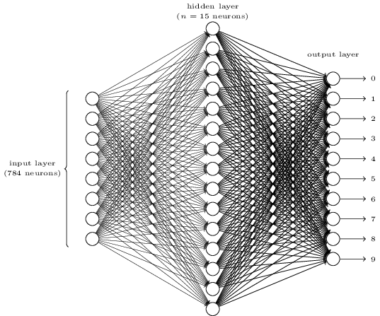
뉴럴 네트워크의 입력층은 입력 픽셀 값을 인코딩하는 뉴런으로 구성된다.
다음 절에서 살펴보겠지만 뉴럴 네트워크의 학습 데이터training data는 손글씨를 스캔한 28x28 픽셀 이미지이다.
그리고 입력층은 $784 = 28 \times 28$개 뉴런으로 구성된다.
간단하게 나타내기 위해 위의 다이어그램에서는 784개 뉴런 중 일부만 표시했다.
입력 픽셀은 그레이 스케일greyscale이며 $0.0$의 값은 흰색을 나타내고, $1.0$은 검은색을 나타낸다.
그리고 $1.0$에 가까울수록 점점 더 어두운 색을 나타낸다.
뉴럴 네트워크의 두 번째 층은 은닉 층이다. 은닉 층에 있는 뉴런의 개수를 $n$이라 하고, $n$의 수를 바꿔가면서 실험할 것이다. 예시 그림에서 은닉 층은 $n=15$개의 뉴런만 포함하고 있다.
뉴럴 네트워크의 출력 층은 10개의 뉴런을 포함한다. 첫 번째 뉴런이 활성화되어 1을 출력하면 뉴럴 네트워크가 숫자를 0으로 분류했다는 의미이다. 두 번째 뉴런이 활성화되면 뉴럴 네트워크가 숫자를 1로 분류한 것이다. 세 번째 뉴런, 그 이후의 뉴런에서도 마찬가지로 해석하면 된다. 조금 더 정확하게 말하면 출력 뉴런에 $0$에서 $9$까지 번호를 매기고, 어느 뉴런의 활성 값activation value이 가장 높은지 알아낸다. 예를 들어 $6$번 뉴런이 가장 높으면 뉴럴 네트워크는 입력 이미지가 $6$이라고 판단한다. 다른 출력 뉴런에 대해서도 마찬가지이다.
왜 $10$개의 뉴런을 사용하는지 의문이 들 수 있다. 무엇보다도 뉴럴 네트워크의 목표는 입력 이미지에 대응하는 숫자 $0, 1, 2, \ldots, 9$를 판별하는 것이다. 겉보기에는 값이 $0$ 또는 $1$에 가까운지에 따라 이진 값binary value을 가지는 4개의 출력 뉴런을 사용해도 될 것 같다. $2^4 = 16$이므로 입력 숫자에 대해 가능한 10개의 값보다 많기 때문에 4개의 뉴런은 답을 인코딩하기에 충분하다. 하지만 왜 이 뉴럴 네트워크는 $10$개의 뉴런을 사용할까? 비효율적이지 않을까? 타당한 이유는 경험적인empirical 사실에 바탕을 둔다: 두 개의 뉴럴 네트워크를 설계해서 실험해볼 수 있다. 그리고 그 결과 4개의 출력 뉴런을 가지는 뉴럴 네트워크보다 10개의 출력 뉴런을 가지는 뉴럴 네트워크가 숫자 인식을 더 잘 학습한다. 하지만 여전히 왜 10개의 출력 뉴런을 가지는 네트워크가 더 잘 동작하는지에 대한 의문은 남아있다. 4개의 출력을 인코딩하는 방법 대신에 10개의 출력을 인코딩하는 방법을 사용해야 한다는 사실을 미리 알 수 있는 방법heuristic은 없을까?
뉴럴 네트워크가 기본 원칙들을 따라서 무엇을 하는지 생각해 보면 왜 그런지 이해할 수 있다.
먼저 10개의 출력 뉴런을 가지는 네트워크를 생각해보자.
첫 번째 출력 뉴런은 숫자가 0인지 아닌지 결정하기 위한 뉴런이다.
이는 은닉 층에 가중치를 매겨 결정한다.
은닉 뉴런hidden neuron은 무엇을 할까?
은닉 층에 있는 첫 번째 뉴런은 아래와 같은 이미지가 있는지 없는지 판단한다고 가정해보자.

위의 이미지와 겹치는 입력 픽셀에 가중치를 많이 두고, 다른 입력에는 가중치를 적게 두어 이를 판변할 수 있다.
비슷한 방법으로 은닉 층의 두 번째, 세 번째, 네번째 뉴런은 아래의 이미지가 있는지 판단한다고 가정해보자.
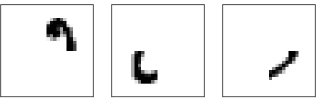
위 네 개의 이미지는 처음에 보았던 숫자 중에서 $0$의 이미지를 만든다고 짐작할 수 있다.

그래서 은닉 층에 있는 네 개의 뉴런이 모두 활성화되면 숫자가 $0$이라고 결론지을 수 있다.
물론 이미지가 $0$이라고 결론지을 수 있는 유일한 근거는 아니다.
다른 방법으로도 $0$이라고 결정할 수 있다.
(가령 위 이미지를 이동시키거나 약간 왜곡하여 알 수 있다)
하지만 적어도 이 경우에 입력이 $0$이라고 결론지을 수 있다.
뉴럴 네트워크가 이러한 방법으로 동작한다면 4개의 출력보다 10개의 출력 뉴런을 가지는게 왜 좋은지 그럴듯하게 설명할 수 있다. 네 개의 출력을 가진다면 첫 번째 뉴런은 숫자에 해당하는 가장 중요한 비트the most significant bit of the digit가 무엇인지 할 것이다. 숫자를 결정하는 가장 중요한 비트를 위에서 본 간단한 모양과 연관짓는 것은 쉽지 않다. 숫자의 부분적인 모양과 출력에서 가장 중요한 비트 사이에 밀접한 관련이 있다는 타당한 근거를 찾기도 어렵다.
말했듯이 이 모든 것은 단지 경험적인 발견heuristic이다. 삼중층 뉴럴 네트워크three-layer neural network가 내가 설명한 방식으로, 즉 은닉 뉴런이 간단한 모양을 감지하면서 동작해야 한다는 것은 아니다. 더 현명한 학습 알고리즘이 단지 4개의 출력 뉴런만을 이용할 수 있도록 만드는 가중치 값을 찾아낼지도 모른다. 하지만 제가 설명한 경험적 발견 법칙heuristic은 잘 동작하기 때문에 좋은 뉴럴 네트워크 구조를 설계하는데 많은 시간을 아낄 수 있다.
지금까지 뉴럴 네트워크를 설계해 보았다.
이제 뉴럴 네트워크가 숫자를 인식하기 위해 어떻게 학습하는지 알아보자.
먼저 학습 할 데이터 세트data set가 필요하다 -
이를 흔히 학습 데이터 세트training data set라 부른다.
여기서는 MNIST 데이터 세트를 사용한다.
MNIST 데이터 세트는 수만 개의 손글씨 숫자를 스캔한 데이터이며 각 데이터에 대한 올바른 분류 정보를 같이 가지고 있다.
MNIST는 NIST(미국표준기술연구소)가 수집한 두 데이터 세트를 수정한 부분집합이라는 뜻이다.
아래에 MNIST 데이터 세트 중 일부를 가져왔다.
알다시피 이 숫자는 이 장의 첫 부분에서 본 것과 같다.
물론 뉴럴 네트워크를 테스트할 때는 학습 데이터 세트에 없는 이미지를 인식하도록 테스트한다.
MNIST 데이터 세트는 두 부분으로 나뉜다. 첫 번째 부분은 학습 데이터로 사용하는 60,000개의 이미지이다. 이 이미지는 250명의 손글씨를 스캔한 것이다. 이들 중 절반은 미국 통계국 직원이며 나머지 절반은 고등학생이다. 이미지는 그레이 스케일greyscale이며 28x28 픽셀 크기이다. MNIST 데이터 세트의 두 번째 부분은 테스트 데이터test data로 사용하는 10,000개의 이미지이다. 이 이미지도 28x28 크기의 그레이 스케일greyscale이다. 테스트 데이터를 이용해 뉴럴 네트워크가 얼마나 잘 학습하여 숫자를 인식하는지 평가한다. 좋은 테스트 성능을 내기 위해 테스트 데이터는 기존의 학습 데이터와 다른 250명의 손글씨를 가져왔다. (마찬가지로 250명 중 절반은 미국 통계국 직원이고 나머지 절반은 고등학생이다.) 이를 통해 뉴럴 네트워크가 학습하는 동안 보지 못한 손글씨 숫자를 인식할 수 있다는 신뢰도를 높여준다.
$x$를 학습 데이터 입력training input이라고 표기하자. 각 학습 데이터 입력 $x$를 28 $\times 28 = 784$ 차원 벡터로 생각하면 편하다. 벡터의 각 성분entry은 이미지에서 하나의 픽셀에 대한 흑백 값grey value을 나타낸다. 입력에 대응하는 원하는 출력desired output을 $y = y(x)$이라 표기하자. 여기서 $y$는 $10$ 차원 벡터이다. 예를 들어 특정 학습 이미지 $x$가 $6$이라면 $y(x) = (0, 0, 0, 0, 0, 0, 1, 0, 0, 0)^T$는 뉴럴 네트워크의 이상적인 출력이다. 여기서 $T$는 전치행렬transpose operation이며 행row 벡터를 열column 벡터로 바꾼다.
모든 학습 데이터 입력 $x$에 대해 뉴럴 네트워크의 출력이 $y(x)$에 근사하도록 만드는 가중치와 편향을 찾는 알고리즘이 필요하다.
이 목표에 얼마나 잘 도달했는지 수량화하기 위해 비용 함수 cost function*
비용 함수는 손실 함수 또는 목적 함수라고도 한다.
이 책에서는 비용 함수라는 용어를 사용하지만
뉴럴 네트워크에 대한 연구 논문에서 다른 용어들이 사용되므로 알아둘 필요가 있다.
를 정의한다.
$$\begin{eqnarray} C(w,b) \equiv
\frac{1}{2n} \sum_x \| y(x) - a\|^2.
\tag{6}\end{eqnarray}$$
여기서 $w$는 뉴럴 네트워크에서 모든 가중치를 의미하고, $b$는 모든 편향, $n$은 학습 데이터 입력의 개수를 의미한다.
$a$는 입력이 $x$일 때 뉴럴 네트워크의 출력 벡터이며, 시그마$\Sigma$는 모든 학습 데이터 입력 $x$에 대한 합이다.
물론 출력 $a$는 $x, w, b$에 따라 달라지며 표기를 간단히 하기 위해 이런 상관성dependence을 나타내지 않았다.
$\| v \|$은 벡터 $v$의 길이를 나타낸다.
여기서 $C$를 이차 quadratic 비용 함수라 부른다.
이차 비용 함수는 평균 제곱 오차mean squared error, 줄여서 MSE라고도 한다.
이차 비용 함수의 형태를 보면, 시그마$\Sigma$의 각 항이 음수가 아니므로 $C(w,b)$은 음수가 아니다.
게다가 $y(x)$가 모든 학습 데이터 입력 $x$에 대한 출력 $a$에 근사할 때 비용 $C(w,b)$은 작은 값 $C(w,b) \approx 0$이 된다.
그래서 학습 알고리즘이 $C(w,b) \approx 0$가 되는 가중치와 편향을 찾을 수 있다면 학습 알고리즘은 좋은 성능을 낼 수 있다.
반대로 $C(w,b)$이 매우 클 때는 많은 수의 입력에 대한 $y(x)$의 값이 출력 $a$에 근사하지 않다는 것을 의미하며 학습 알고리즘의 성능은 떨어진다.
그래서 학습 알고리즘의 목표는 가중치와 편향의 함수인 비용 $C(w,b)$을 최소화하는 것이다.
즉 가능한 비용을 작게 만드는 가중치와 편향의 집합을 찾는 것이 목표이다.
이를 위해 경사 하강법 gradient descent이라 알려진 알고리즘을 이용할 것이다.
왜 이차 비용 함수를 도입할까? 무엇보다 뉴럴 네트워크가 올바르게 분류하는 이미지의 수가 중요하지 않은가? 왜 올바르게 분류되는 이미지 수를 직접 최대화하지 않고, 이차 비용 함수와 같은 다른 방법을 사용할까? 올바르게 분류되는 이미지의 수는 뉴럴 네트워크의 가중치와 편향에 대해 매끄러운 함수smooth function가 아니기 때문이다. 대부분의 경우 가중치와 편향에 매우 작은 변화를 가할 때, 올바르게 분류하는 학습 데이터 이미지의 수는 거의 변하지 않는다. 이 때문에 성능을 향상시키기 위해 가중치와 편향을 얼마나 바꿔야 하는지 알아내기 어렵다. 대신 이차 비용 함수처럼 매끄러운smooth 비용 함수를 사용하면 비용에서 성능을 향상시키기 위해 가중치와 편향을 얼마나 바꾸어야 하는지 알기 쉽다. 이러한 이유로 이차 비용 함수를 도입하여 이 함수를 최소화한다. 그리고 그 다음에 분류의 정확도를 측정한다.
매끄러운smooth 비용 함수를 사용하더라도 왜 방정식 (6) $$\begin{eqnarray} C(w,b) \equiv \frac{1}{2n} \sum_x \| y(x) - a\|^2 \nonumber\end{eqnarray}$$ 과 같은 이차 함수를 사용하는지 의문이 들 수 있다. 임의로 ad hoc 선택한 것일까? 다른 비용 함수를 선택한다면 완전히 다른 가중치와 편향을 가질까? 이는 타당한 의심이다. 그리고 뒤에서 다시 한번 비용 함수를 살펴보고 약간 수정해 볼 것이다. 하지만 방정식 (6) $$\begin{eqnarray} C(w,b) \equiv \frac{1}{2n} \sum_x \| y(x) - a\|^2 \nonumber\end{eqnarray}$$ 과 같은 이차 비용 함수를 이용하여 뉴럴 네트워크 학습의 기본을 잘 이해할 수 있기 때문에 당분간 이에 집중할 것이다.
간략하게 다시 말하면, 뉴럴 네트워크를 학습시켜 이차 비용 함수 $C(w, b)$를 최소화하는 가중치와 편향을 찾는 것이 목표이다. 이는 우량조건문제well-posed problem(문제의 답이 존재하고, 답이 유일하며, 초기 조건에 따라 답이 변하는 문제를 우량조건문제라 한다)이다. 하지만 가중치 $w$와 편향 $b$의 해석, 백그라운드background에 숨어있는 $\sigma$함수, 뉴럴 네트워크 구조의 선택, MNIST 등과 같이 주의를 분산시키는 구조가 있다. 대부분의 구조를 무시하고 최소화에만 집중하면 많은 부분을 이해할 수 있다. 그래서 비용 함수의 구체적인 형태와 뉴럴 네트워크의 연결 등에 대해서 당분간 신경쓰지 않겠다. 대신 다변수 함수가 주어지고 이 함수를 최소화할 것이다. 최소화 문제를 풀기 위해 사용할 수 있는 경사 하강법 gradient descent이라 불리는 기술을 살펴볼 것이다. 그 뒤 뉴럴 네트워크에서 최소화하려는 특정 함수를 살펴볼 것이다.
이제, 함수 $C(v)$를 최소화한다고 가정하자.
이는 다변수 $v = v_1, v_2, \ldots$에 대한 어떤 실숫값 함수real-valued function입니다.
어떤 함수도 될 수 있다는 점을 강조하기 위해 $w$와 $b$를 $v$로 치환했다 -
더이상 뉴럴 네트워크의 관점에서 생각하지 않을 것이다.
$C(v)$를 최소화하기 위해 $C$를 두개의 변수 $v_1$과 $v_2$에 대한 함수로 생각하면 도움이 된다.
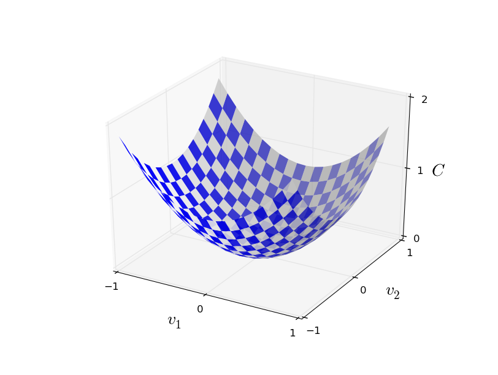
$C$가 최솟값이 되는 지점을 찾는 것이 목표이다.
물론 위에 나타난 함수의 그래프에서 눈으로 보고 최솟값을 찾을 수 있다.
이는 내가 그래프를 단순하게 그렸기 때문이다.
일반적인 함수 $C$는 다변수를 가지는 복잡한 함수일 수 있으며, 이 경우 눈으로 최솟값을 찾는 것은 불가능하다.
최솟값을 찾기 위해 미분을 이용해서 문제를 해결할 수 있다. 도함수derivative를 구해 $C$의 극값extremum을 찾을 수 있다. 운 좋게 함수 $C$가 하나의 변수 혹은 적은 수의 변수에 대한 함수이면 이는 잘 동작한다. 하지만 훨씬 많은 수의 변수에 대한 함수라면 어렵다. 뉴럴 네트워크의 경우 훨씬 더 많은 변수를 다룬다 - 가장 큰 뉴럴 네트워크는 복잡한 방법으로 수억 개의 가중치와 편향에 의존하는 비용 함수를 가진다. 미분을 사용하여 이를 최적화하기에는 역부족이다.
( $C$를 이변수 함수라 생각해 통찰력insight을 얻은 뒤, 두 문단 뒤에 입장을 바꿔 "이변수 이상에 대한 함수일 경우는 어떨까?"라고 물을 것이다. 유감스럽게 생각한다. $C$를 이변수 함수로 생각하는 것은 정말 도움이 될 것이다. 하지만 때론 이러한 이해가 무너지는 일이 발생한다. 바로 이전의 두 문단이 이 경우에 해당한다. 여러 직관적인 이해를 살펴보는 것도 좋은 수학적인 사고이며, 이해한 것을 언제 적절히 사용할 수 있는지 공부하는 것도 수학적인 사고 방법이다. )
결국 미분은 동작하지 않는다. 다행스럽게도 잘 동작하는 알고리즘을 제시하는 좋은 비유가 있다. 우리가 다루고 있는 함수를 일종의 계곡이라고 생각해보자. 그리고 공이 계곡 경사를 따라 굴러 내려간다고 상상해보자. 일상적인 경험으로 미루어 볼 때 공은 결국 계곡의 아래로 내려갈 것이다. 함수의 최솟값을 찾기 위해 이 아이디어를 이용할 수 있다. (상상 속의) 공의 시작점을 무작위로 고른 뒤 계곡 바닥을 향해 굴러 내려가는 공의 움직임을 시뮬레이션해보자. $C$의 도함수(아마 이차 도함수second derivative를 사용해야할 것이다)를 계산하여 시뮬레이션을 간단하게 해볼 수 있다. 이 도함수는 계곡의 국지적local "모양shape"에 대해 알아야 할 모든 것을 알려준다. 따라서 공이 어떻게 움직이는지 알 수 있다.
방금한 설명에서 공에 대한 마찰력과 중력 등을 고려하여 뉴턴의 운동 방정식을 쓸 것이라고 생각할 수 있다. 하지만 여기서 우리는 공의 움직임을 그렇게 심오하게 살펴보지는 않을 것이다 - 단지 $C$를 최소화하는 알고리즘을 고안하는 것이지 물리 법칙을 이용해 정확한 시뮬레이션을 하려는 것은 아니다. 공의 관점으로 생각하여 우리의 사고를 제한하지 않고 상상을 시뮬레이션하려는 의도이다. 그러므로 물리적으로 사소한 부분에 집착하지 말고 스스로에게 간단한 질문을 해보자: 하루동안 신god이 되어 공이 어떻게 움직여야 하는지 결정하는 자신만의 물리 법칙을 만들 수 있다면, 공이 항상 계곡의 바닥으로 굴러갈 수 있도록 하는 운동 법칙을 어떻게 만들어야 할까?
이 질문을 더 정확하게 써보자. 공이 $v_1$ 방향으로 $\Delta v_1$만큼 움직이고, $v_2$ 방향으로 $\Delta v_2$ 만큼 움직일 때 어떤 일이 일어나는지 생각해보자. 미분을 이용해 $C$의 변화를 다음과 같이 쓸 수 있다. $$\begin{eqnarray} \Delta C \approx \frac{\partial C}{\partial v_1} \Delta v_1 + \frac{\partial C}{\partial v_2} \Delta v_2. \tag{7}\end{eqnarray}$$ $\Delta C$를 음수로 만드는 $\Delta v_1$과 $\Delta v_2$를 고르는 방법을 찾고자 한다. 즉 공이 계곡으로 굴러 내려가도록 만드는 $\Delta v_1$과 $\Delta v_2$를 선택할 것이다. 벡터 $v$의 변화량 $\Delta v$을 $\Delta v \equiv (\Delta v_1, \Delta v_2)^T$로 정의하면, 어떻게 $\Delta v_1$과 $\Delta v_2$를 선택해야 하는지 알아내는데 도움이 된다. 여기서 $T$는 전치행렬 연산이며 행 벡터를 열 벡터로 바꾼다. 또한 $C$의 그래디언트 gradient를 편미분partial derivative의 벡터 $\left(\frac{\partial C}{\partial v_1}, \frac{\partial C}{\partial v_2}\right)^T$로 정의한다. 그래디언트gradient 벡터를 $\nabla C$로 표기한다. $$\begin{eqnarray} \nabla C \equiv \left( \frac{\partial C}{\partial v_1}, \frac{\partial C}{\partial v_2} \right)^T. \tag{8}\end{eqnarray}$$ 잠시뒤 변화량 $\Delta C$을 $\Delta v$와 그래디언트gradient $\nabla C$에 관해 정리할 것이다. 그 전에 그래디언트gradient를 이해하기 어려운 사람을 위해 몇 가지 사항을 분명히 짚고 넘어가자. $\nabla C$를 처음 본 사람은 어떻게 $\nabla$ 기호를 이해해야 하는지 궁금해 한다. $\nabla$은 정확히 무엇을 의미할까? 사실 $\nabla C$을 하나의 수학적 객체로 이해하여 위에서 정의한 벡터로 생각해도 좋다. 이는 두 가지 기호를 사용하여 표시할 수 있다. 이 관점에서 $\nabla$은 "$\nabla$은 그래디언트gradient 벡터야."라고 말하는 표기에 불과하다. $\nabla$을 독립적인 수학적 개체로 보는 심화된 관점이 있지만 여기서는 불필요하다.
이 정의에 의해 $\Delta C$에 관한 식 (7) $$\begin{eqnarray} \Delta C \approx \frac{\partial C}{\partial v_1} \Delta v_1 + \frac{\partial C}{\partial v_2} \Delta v_2 \nonumber\end{eqnarray}$$ 은 다음과 같이 쓸 수 있다. $$\begin{eqnarray} \Delta C \approx \nabla C \cdot \Delta v. \tag{9}\end{eqnarray}$$ 이 식을 통해 왜 $\nabla C$이 그래디언트gradient 벡터라 불리는지 알 수 있다: 그래디언트gradient, 경사가 무엇을 할지 예상한 것처럼 $\nabla C$는 $v$의 변화를 $C$의 변화와 관련시킨다. 하지만 이 식에 대해 흥미로운 점은 이 식이 $\Delta C$를 음수로 만들기 위해 $\Delta v$를 어떻게 선택해야 하는지 보여준다는 것이다. 특히 다음과 같이 선택했다고 가정하자. $$\begin{eqnarray} \Delta v = -\eta \nabla C, \tag{10}\end{eqnarray}$$ 여기서 $\eta$는 (학습률 running rate이라 알려진) 작은 양수인 파라미터parameter이다. 그러면 식 (9) $$\begin{eqnarray} \Delta C \approx \nabla C \cdot \Delta v \nonumber\end{eqnarray}$$ 에 의해 $\Delta C \approx -\eta \nabla C \cdot \nabla C = -\eta \|\nabla C\|^2$ 이 된다. $v$가 식 (10) $$\begin{eqnarray} \Delta v = -\eta \nabla C \nonumber\end{eqnarray}$$ 에 따라 변하면 $\| \nabla C \|^2 \geq 0$이므로, $\Delta C \leq 0$이 보장되어 $C$는 증가하지 않고 항상 감소한다. (물론 식 (9) $$\begin{eqnarray} \Delta C \approx \nabla C \cdot \Delta v \nonumber\end{eqnarray}$$ 의 근사 경계 안에서 성립한다) 이는 정확히 우리가 원했던 특성이다. 그러므로 경사 하강 알고리즘에서 공에 대한 "운동 법칙"을 정의하기 위해 식 (10) $$\begin{eqnarray} \Delta v = -\eta \nabla C \nonumber\end{eqnarray}$$ 을 사용할 것이다. 즉 식 (10) $$\begin{eqnarray} \Delta v = -\eta \nabla C \nonumber\end{eqnarray}$$ 을 사용하여 $\Delta v$에 대한 값을 계산하고, 공의 위치 $v$를 계산한 값만큼 움직일 것이다. $$\begin{eqnarray} v \rightarrow v' = v -\eta \nabla C. \tag{11}\end{eqnarray}$$ 그런 다음 또 움직일 때 이 업데이트 규칙을 다시 사용할 것이다. 이를 계속 반복하여 우리가 원하는 전역 최솟값global minimum에 도달할 때 까지 $C$를 계속 감소시킬 것이다.
요약하면 경사 하강 알고리즘은 반복적으로 그래디언트gradient $\nabla C$을 계산하여, 반대 방향으로 움직여 계곡의 경사를 따라 "하강"한다.
이를 시각화하면 아래와 같다.

경사 하강법이 이 규칙을 이용하여 현실 세계의 물리적인 운동을 재현하는 것은 아니다.
현실 세계에서 공은 가속도를 가지며, 가속도에 의해 공이 경사를 가로질러 (잠시나마) 언덕 위로 굴러 올라갈 수도 있다.
현실 세계에서 공기 계곡을 따라 굴러가는 것은 마찰의 영향을 받은 후에만 가능하다.
그에 반해 $\Delta v$를 선택하는 규칙은 "지금 바로 내려가라"고 말해준다.
이는 여전히 최솟값을 찾는데 좋은 규칙이다.
경사 하강법이 올바르게 동작하려면 학습률 $\eta$를 충분히 작은 값으로 선택해 식 (9) $$\begin{eqnarray} \Delta C \approx \nabla C \cdot \Delta v \nonumber\end{eqnarray}$$ 가 좋은 근사를 갖도록 해야한다. 그렇지 않으면 $\Delta C > 0$가 되어 좋지 못한 결과를 얻는다. 동시에 $\eta$가 너무 작아지면, $\Delta v$의 변화가 매우 작아져 경사 하강 알고리즘은 매우 느리게 동작한다. 실제 구현에서 식 (9) $$\begin{eqnarray} \Delta C \approx \nabla C \cdot \Delta v \nonumber\end{eqnarray}$$ 가 좋은 근사를 하면서 알고리즘이 너무 느리지 않게 만드는 $\eta$는 다양하다. 이것이 어떻게 동작하는지 뒤에서 살펴보자.
$C$가 이변수 함수인 경우에 대한 경사 하강 알고리즘을 설명했다. 하지만 사실 $C$가 많은 수의 변수를 가질 때에도 잘 동작한다. 특히 $m$개의 변수 $v_1,\ldots,v_m$에 대한 함수 $C$를 가정해보자. 그러면 작은 변화량 $\Delta v = (\Delta v_1, \ldots, \Delta v_m)^T$에 의한 $C$의 변화 $\Delta C$는 다음과 같다. $$\begin{eqnarray} \Delta C \approx \nabla C \cdot \Delta v, \tag{12}\end{eqnarray}$$ 여기서 $\nabla C$는 다음과 같은 벡터이다. $$\begin{eqnarray} \nabla C \equiv \left(\frac{\partial C}{\partial v_1}, \ldots, \frac{\partial C}{\partial v_m}\right)^T. \tag{13}\end{eqnarray}$$ 이변수에 대한 경우처럼 $\Delta v$를 다음과 같이 선택할 수 있다. $$\begin{eqnarray} \Delta v = -\eta \nabla C, \tag{14}\end{eqnarray}$$ 그러면 $\Delta C$에 대한 (근사)식 (12) $$\begin{eqnarray} \Delta C \approx \nabla C \cdot \Delta v \nonumber\end{eqnarray}$$ 는 음수가 된다. 이를 통해 $C$가 다변수 함수인 경우에도 다음 식과 같은 업데이트 규칙을 반복적으로 적용해 그래디언트gradient가 최솟값을 찾도록 할 수 있다. $$\begin{eqnarray} v \rightarrow v' = v-\eta \nabla C. \tag{15}\end{eqnarray}$$ 이 업데이트 규칙이 경사 하강 알고리즘을 정의한다고 볼 수 있다. 업데이트 규칙은 함수 $C$의 최솟값을 찾기 위해 위치 $v$를 반복적으로 바꾼다. 규칙이 항상 동작하는 것은 아니다 - 몇몇 경우에는 잘못된 동작을 할 수 있으며, 이때 경사 하강법은 $C$의 전역 최솟값을 찾지 못한다. 이 내용에 대해서는 책의 뒷부분에서 살펴보겠다. 하지만 실제로 경사 하강법은 잘 동작하며, 뉴럴 네트워크에서 비용 함수를 최소화하는 매우 강력한 방법이다. 그래서 뉴럴 네트워크는 경사 하강법을 통해 학습한다.
경사 하강법은 심지어 최적 전략으로 최솟값을 찾는다. $C$를 가능한 많이 감소시키기 위해 위치를 $\Delta v$만큼 움직인다고 가정하자. 이는 $\Delta C \approx \nabla C \cdot \Delta v$를 최소화하는 것과 같다. 매우 작은 고정된 값 $\epsilon > 0$에 대한 $\| \Delta v \| = \epsilon$를 만족하도록 위치 변화의 크기를 제한해보자. 즉 매우 작은 고정된 크기로 위치를 변화시켜, 가능한 $C$가 많이 감소하는 이동 방향을 찾으려 한다. $\nabla C \cdot \Delta v$를 최소화하는 $\Delta v$는 $\Delta v = - \eta \nabla C$라는 것을 증명할 수 있다. 여기서 $\eta = \epsilon / \|\nabla C\|$는 크기 제한size constraint $\|\Delta v\| = \epsilon$에 의해 결정된다. 그러므로 경사 하강법은 $C$가 가장 많이 감소하는 방향으로 내려가는 방법이라 볼 수 있다.
이전 단락의 주장을 증명하라. 힌트: 쿄시-슈바르츠 부등식Cauchy-Schwarz inequality을 이용하라.
함수 $C$가 이변수 함수인 경우와 다변수 함수인 경우에 대해 경사 하강 알고리즘을 설명하였다. 함수 $C$가 일변수 함수인 경우에 무슨 일이 일어나는가? 일차원인 경우 경사 하강 알고리즘의 동작을 기하학적으로 해석할 수 있나?
사람들은 경사 하강법의 여러 가지 변형을 조사하였으며 현실 세계의 물리 현상에 더 가깝게 변형한 경우도 있다.
실질적인 공을 모방하면 어떤 면에서는 이점이 있지만, 치명적인 단점도 존재한다:
$C$의 이차 편도함수second partial derivative룰 계산해야 하며, 이는 비용이 많이 든다.
비용이 많이 드는 이유를 살펴보자.
모든 이차 편도함수 $\partial^2 C/ \partial v_j \partial v_k$ 을 계산한다고 가정해보자.
변수 $v_j$가 백 만개 있다면 백만의 제곱인 일조 번 이차 편도함수를 계산해야한다.*
사실 $\partial^2 C/ \partial v_j \partial v_k = \partial^2 C/ \partial
v_k \partial v_j$이므로
5000억 번 계산해야한다.
이를 계산하는 비용은 만만치 않다.
그렇지만 이런 문제를 피할 수 있는 몇 가지 방법trick이 있고, 경사 하강법에 대한 대안을 찾는 것은 현재 활발하게 연구되고 있는 분야이다.
하지만 이 책에서는 뉴럴 네트워크를 학습시키는 방법으로 경사 하강법(그리고 경사 하강법의 변형)을 살펴볼 것이다.
뉴럴 네트워크를 학습시키기 위해 경사 하강법을 어떻게 적용할 수 있을까? 경사 하강법을 이용하여 식 (6) $$\begin{eqnarray} C(w,b) \equiv \frac{1}{2n} \sum_x \| y(x) - a\|^2 \nonumber\end{eqnarray}$$ 에서 비용을 최소화하는 가중치 $w_k$와 편향 $b_l$을 찾는 것이 기본적인 아이디어이다. 어떻게 동작하는지 살펴보기 위해 경사 하강법의 업데이트 규칙을 고쳐 써보자. $v_j$를 가중치와 편향으로 치환하여 써보자. 즉 "위치"는 $w_k$와 $b_l$을 가지며, 그래디언트gradient 벡터 $\nabla C$는 상응하는 $\partial C / \partial w_k$ 와 $\partial C / \partial b_l$을 가진다. 경사 하강법의 업데이트 규칙을 위 요소들로 고쳐 쓰면 다음과 같다. $$\begin{eqnarray} w_k & \rightarrow & w_k' = w_k-\eta \frac{\partial C}{\partial w_k} \tag{16}\\ b_l & \rightarrow & b_l' = b_l-\eta \frac{\partial C}{\partial b_l}. \tag{17}\end{eqnarray}$$ 이 업데이트 규칙을 반복적으로 적용하면 "언덕 아래로 굴러 내려"갈 수 있으며, 비용 함수의 최솟값을 찾을 수 있다. 다시 말해 이것이 바로 뉴럴 네트워크를 학습시키는데 사용되는 규칙이다.
경사 하강법의 규칙을 적용하는데에는 몇 가지 문제점이 있다. 책의 뒷부분에서 이 문제점을 깊이있게 살펴보도록 하고, 우선은 한 가지 문제점에 대해 알아보자. 문제가 무엇인지 이해하기 위해 식 (6) $$\begin{eqnarray} C(w,b) \equiv \frac{1}{2n} \sum_x \| y(x) - a\|^2 \nonumber\end{eqnarray}$$ 에서 이차 비용 함수를 다시 한번 살펴보자. 이 비용 함수는 $C = \frac{1}{n} \sum_x C_x$과 같은 형태이며, 이는 각각의 학습 데이터에 대한 비용 $C_x \equiv \frac{\|y(x)-a\|^2}{2}$의 평균이다. 실제로 $\nabla C$을 계산하려면, 각각의 학습 데이터 입력 $x$에 대해 개별적으로 $\nabla C_x$을 계산한 다음 평균해야 한다. 그러면 $\nabla C = \frac{1}{n} \sum_x \nabla C_x$이 된다. 하지만 학습 데이터 입력 수가 많으면, 계산은 오래 걸리며 학습 속도가 매우 느려진다.
확률적 경사 하강법stochastic gradient descent이라 부르는 아이디어를 이용하면 학습 속도를 높일 수 있다. 확률적 경사 하강법은 무작위로 고른 학습 데이터 입력의 작은 표본sample에 대해 $\nabla C_x$을 계산해서 $\nabla C$을 측정한다. 작은 표본에 대해 평균값을 계산하여 실질적인 $\nabla C$ 값을 빠르게 측정할 수 있고, 이느 경사 하강의 속도를 높여 결국 학습 속도를 높여 준다..
더 정확하게 설명하면 확률적 경사 하강법은 무작위로 학습 데이터 입력 $m$개를 선택하여 동작한다. 이렇게 무작위로 뽑힌 학습 데이터 입력을 $X_1, X_2, \ldots, X_m$이라 하고, 이들을 미니 배치 mini-batch라 부른다. 표본의 크기 $m$이 충분히 크면, $\nabla C_{X_j}$의 평균 값은 모든 $\nabla C_x$값의 평균과 대략적으로 같아진다. 식으로 쓰면 다음과 같다. $$\begin{eqnarray} \frac{\sum_{j=1}^m \nabla C_{X_{j}}}{m} \approx \frac{\sum_x \nabla C_x}{n} = \nabla C, \tag{18}\end{eqnarray}$$ 여기서 두 번째 시그마$\Sigma$는 학습 데이터 전체에 대한 합이다. 양 변을 바꿔서 쓰면 다음과 같다. $$\begin{eqnarray} \nabla C \approx \frac{1}{m} \sum_{j=1}^m \nabla C_{X_{j}}, \tag{19}\end{eqnarray}$$ 단지 무작위로 선택한 미니 배치에 대한 그래디언트gradient를 계산하여 전체에 대한 그래디언트gradient를 측정할 수 있다는 점을 확인하자.
이를 뉴럴 네트워크의 학습과 연관시켜보자. $w_k$와 $b_l$는 뉴럴 네트워크의 가중치와 편향이라 가정한다. 확률적 경사 하강법은 무작위로 선택한 학습 입력의 미니 배치를 뽑아서 동작한다. 그리고 다음의 식으로 학습을 진행한다. $$\begin{eqnarray} w_k & \rightarrow & w_k' = w_k-\frac{\eta}{m} \sum_j \frac{\partial C_{X_j}}{\partial w_k} \tag{20}\\ b_l & \rightarrow & b_l' = b_l-\frac{\eta}{m} \sum_j \frac{\partial C_{X_j}}{\partial b_l}, \tag{21}\end{eqnarray}$$ 여기서 시그마$\Sigma는 현재 미니 배치에 있는 모든 학습 데이터 $X_j$에 대한 합이다. 그런 다음 무작위로 선택한 다른 미니 배치를 뽑아서 학습한다. 학습 입력 데이터가 고갈될 때 까지 학습을 진행하며, 이를 학습의 한 에폭 an epoch of training(학습의 한 세대)이 완료되었다고 말한다. 이 시점에서 새로운 학습 에폭epoch을 시작한다.
덧붙여 말하면 비용 함수를 스케일링scaling하는 방법과 가중치와 편향에 대한 미니 배치 업데이트 규칙의 스케일링scaling 방법이 다양하다는 점에 주의해야 한다. 식 (6) $$\begin{eqnarray} C(w,b) \equiv \frac{1}{2n} \sum_x \| y(x) - a\|^2 \nonumber\end{eqnarray}$$ 에서 전체 비용 함수를 $\frac{1}{n}$으로 스케일링scaling했다.(전체 비용 함수에 $\frac{1}{n}$을 곱해주었다) 평균이 아닌 개별 학습 데이터에 대한 합을 계산할 때 $\frac{1}{n}$ 을 빼먹는 경우가 많다. 사람들은 종종 $\frac{1}{n}$을 빼먹어 평균값이 아닌 개별 학습 데이터에 대한 비용 합을 계산한다. 이는 전체 학습 데이터 개수가 알려지지 않은 경우에 유용하다. 예를 들어 실시간으로 학습 데이터가 만들어지는 경우 이를 이용할 수 있다. 그리고 비슷한 방법으로 미니 배치는 규칙 (20) $$\begin{eqnarray} w_k & \rightarrow & w_k' = w_k-\frac{\eta}{m} \sum_j \frac{\partial C_{X_j}}{\partial w_k} \nonumber\end{eqnarray}$$ 과 (21) $$\begin{eqnarray} b_l & \rightarrow & b_l' = b_l-\frac{\eta}{m} \sum_j \frac{\partial C_{X_j}}{\partial b_l} \nonumber\end{eqnarray}$$ 을 업데이트할 때 시그마$\Sigma$ 앞에 $\frac{1}{m}$을 빼먹는 경우가 있다. 학습률 $\eta$를 조정하는 것과 동등하므로 개념적으로는 큰 차이가 없다. 하지만 다른 작업들을 상세히 비교할 때 주의해야 한다.
확률적 경사 하강법을 여론 조사에 비유할 수 있다: 전체 선거를 진행하는 것이 어렵기 때문에 쉽게 할 수 있는 여론 조사를 진행한다. 마찬가지로 전체 배치에 대해 경사 하강법을 적용하는 것보다 표본인 미니 배치에 대해 경사 하강법을 적용하는 것이 훨씬 쉽다. 예를 들어 MNIST처럼 학습 데이터 크기 $n = 60,000$인 경우, 미니 배치 크기 $m = 10$으로 하면 그래디언트gradient를 $6,000$배 빨리 측정할 수 있다. 물론 통계적인 변동statistical fluctuation이 있을 수 있으므로 측정이 완벽하지는 않다. 하지만 그렇다고 완벽할 필요도 없다: 우리에게 필요한 것은 $C$를 감소시키는 일반적인 방향에 대한 움직임이다. 이는 그래디언트gradient를 정확하게 계산할 필요가 없다는 것을 의미한다. 실제로 확률적 경사 하강법은 흔히 쓰이는 방법이고, 뉴럴 네트워크를 학습시키는데에 강력한 기술이다. 그리고 이 책에서 살펴볼 여러가지 학습 방법의 기초 토대이다.
경사 하강법의 극단적인 예는 미니 배치 크기를 1로 하는 것이다. 즉 학습 데이터 입력 $x$가 주어지고, 가중치와 편향을 $w_k \rightarrow w_k' = w_k - \eta \partial C_x / \partial w_k$과 $b_l \rightarrow b_l' = b_l - \eta \partial C_x / \partial b_l$으로 업데이트한다. 그런 다음 다른 학습 데이터를 선택하고, 가중치와 편향을 다시 업데이트한다. 이 과정을 계속 반복한다. 이 절차를 온라인 학습 또는 증분식 학습 online, on-line, or incremental learning이라 한다. 온라인 학습에서 뉴럴 네트워크는 한 번에 하나의 학습 데이터를 이용하여 학습한다. 예를 들어 미니 배치 크기가 20인 확률적 경사 하강법과 비교하여 온라인 학습의 장점과 단점을 서술하여라.
경사 하강법을 처음 접하는 사람들이 겪을 수 있는 어려운 점들에 대해 설명하면서 이 절을 마무리하려 한다. 뉴럴 네트워크에서 비용 함수 $C$는 모든 가중치와 편향을 변수로 가지는 다변수 함수이다. 그러므로 어떤 측면에서 보면 비용 함수는 고차원 공간 상의 면을 정의한다. 몇몇 사람들은 다음과 같이 생각하기도 한다: "이 차원을 시각화할 수 있어야 한다." 그리고 다음과 같은 걱정을 한다: "5차원은 커녕 사차원도 상상할 수 없다." 이들은 가질 수 없고 진정한 수학자만이 가질 수 있는 어떤 특별한 능력이 있는 것은 아닐까? 물론 그런 것은 없다. 전문적인 수학자라 할지라도 사차원을 시각화할 수 없다. 대신 수학자들은 무슨 일이 일어나는지 표시하기 위해 다른 방법을 사용한다. 이 방법이 바로 우리가 위에서 살펴 본 것이다. $C$를 감소시키기 위해서는 어떻게 움직여야 하는지 이해하려고 $\Delta C$를 (시각적인 방법이 아닌) 수식으로 표현했다. 고차원을 생각하는데 뛰어난 사람들은 다양한 기술들을 가지고 있으며 그 중 하나의 예가 수학식이다. 이러한 기술은 삼차원을 시각화하는 것 만큼 단순하지 않지만 한 번 습득하면 고차원에 대해 쉽게 생각할 있다. 여기서는 더 깊게 살펴보지 않을 것이다. 하지만 더 깊게 알고 싶다면 수학자가 고차원을 생각할 때 사용하는 기술에 대한 이 글을 읽어보면 좋다. 몇몇 기술은 꽤 복잡하지만 대부분의 내용은 직관적이며 누구나 이해할 수 있다.
확률적 경사 하강법과 MNIST 학습 데이터를 이용해서 손글씨 숫자를 어떻게 인식하는지 학습하는 프로그램을 작성해보자. 파이썬Python (2.7) 프로그램을 이용해 단 74줄의 코드로 작성해 볼 것이다. 먼저 필요한 것은 MNIST 데이터이다. git 사용자라면 이 책의 코드 저장소code repository를 클론cloning해서 데이터를 얻을 수 있다. git 사용자가 아니라면 여기서 데이터와 코드를 다운받을 수 있다.
MNIST 데이터에 대해 처음 설명할 때, $60,000$개의 학습 이미지training image와 $10,000$개의 테스트 이미지test image로 구성되어 있다고 말했다.
이것이 공식적인 MNIST 데이터에 대한 설명이다.
사실 여기서는 데이터를 조금 다른 방식으로 나누어 볼 것이다.
테스트 이미지는 그대로 남겨두고, $60,000$개의 학습 데이터를 두 부분으로 나눌 것이다.
$50,000$개의 이미지를 이용해 뉴럴 네트워크를 학습시키고, 다른 $10,000$개의 이미지를 검증 데이터 세트validation set로 사용할 것이다.
이 장에서는 검증 데이터를 사용하지 않는다.
하지만 책의 뒷부분에서 뉴럴 네트워크가 직접 선택하지 않는 학습률과 같은 뉴럴 네트워크의 하이퍼파라미터 hyper-parameter를 설정하는 방법을 찾는데 검증 데이터 세트를 이용한다.
원본 MNIST 데이터에는 검증 데이터가 없지만 대부분의 사람들은 이러한 방식으로 MNIST를 사용하고 있으며, 뉴럴 네트워크에서는 흔하게 검증 데이터를 이용한다.
앞으로 "MNIST 학습 데이터"는 $60,000$개의 원본 이미지 데이터 세트
*
앞서 말한 것처럼 MNISt 데이터 세트는 NIST와 미국 국립표준기술연구소에서 수집한 자료이다.
NIST 데이터 세트를 수정해 Yann LeCun, Corina Cortes, Christopher J. C. Burges가
더 편리한 포맷으로 바꿔 MNIST를 만들었다.
코드 저장소에 있는 데이터 세트는 MNIST 데이터를 파이썬으로
다운로드하고 수정하기 쉬운 형태이다.
이 형식의 데이터를 University of Motreal에 있는
LISA machine learning laboratory에서 가져왔다.
가 아닌 $50,000$개의 이미지 데이터 세트를 의미한다.
MNIST 데이터 이외에 선형대수 계산을 빨리하기 위해 Numpy라는 파이썬 라이브러리가 필요하다. Numpy 설치는 여기서 할 수 있다.
전체 코드를 보여주기에 앞서 뉴럴 네트워크 코드에서 핵심적인 특징을 살펴보자.
중요한 부분은 Network 클래스class이며, 이 클래스를 이용해 뉴럴 네트워크를 표현한다.
Network 객체object를 초기화하는데 사용하는 코드가 나타나 아래에 있다.
sizes는 각 층에 있는 뉴런 개수를 나타낸다.
예를 들어 첫 번째 층에 2개의 뉴런, 두 번째 층에 3개의 뉴런, 마지막 층에 1개의 뉴런을 가진 Network 객체를 만들려면 아래와 같은 코드를 작성해야 된다.
Network 객체에서 편향과 가중치는 모두 무작위로 초기화된다.
편향과 가중치를 초기화할 때 Numpy np.random.randn 함수를 사용하여 평균은 $0$이고 표준 편차standard devication가 $1$인 가우스 분포Gaussian distribution를 생성한다.
이렇게 무작위로 초기화하는 부분이 확률적 경사 하강 알고리즘의 시작점이다.
이 장의 뒷부분에서 가중치와 편향을 초기화하는 더 좋은 방법에 대해 살펴볼 것이다.
하지만 당분간은 이렇게 구현하기로 한다.
Network 초기화 코드는 첫 번째 뉴런층을 입력층이라 가정하고, 이 뉴런에 대한 편향값은 설정하지 않는다.
편향은 이후의 층에서 출력을 계산할 때 사용된다.
Numpy 행렬의 리스트에 가중치와 편향을 저장한다.
예를 들어 net.weights[1]은 Numpy 행렬이며, 두 번째와 세 번째 뉴런 층을 연결하는 가중치를 저장하고 있다.
(파이썬 리스트의 인덱스는 0부터 시작하므로 이는 첫 번째와 두 번째 층을 연결하는 것이 아니다)
net.weights[1]을 단순하게 행렬 $w$로 표기하자.
$w_jk$는 두 번째 층의 $k$번째 뉴런과 세 번째 층의 $j$번째 뉴런을 연결하는 가중치이다.
인덱스 $j$와 $k$의 순서가 다소 어색할 수 있다 -
$j$와 $k$의 순서를 바꾸는 것이 맞을 수도 있다.
이러한 순서를 사용하는 가장 큰 이점은 세 번째 층의 활성화 벡터vector of activations가 다음과 같기 때문이다.
$$\begin{eqnarray}
a' = \sigma(w a + b).
\tag{22}\end{eqnarray}$$
위 식은 많은 것을 포함하고 있으므로 조금 더 자세히 풀어 써보자.
$a$는 두 번째 층의 활성화 벡터이다.
$a'$을 얻기 위해 $a$에 가중치 행렬 $w$를 곱하고, 편향 벡터 $b$를 더한다.
그 다음 벡터 $w a +b$의 모든 원소에 함수 $\sigma$를 적용한다.
(이는 함수 $\sigma$를 벡터화 vectorizing한다고 말한다)
시그모이드 뉴런의 출력을 계산하는 식
(4)
$$\begin{eqnarray}
\frac{1}{1+\exp(-\sum_j w_j x_j-b)} \nonumber\end{eqnarray}$$
와 식
(22)
$$\begin{eqnarray}
a' = \sigma(w a + b) \nonumber\end{eqnarray}$$
의 결과가 비슷하다는 사실을 쉽게 증명할 수 있다.
식 (22) $$\begin{eqnarray} a' = \sigma(w a + b) \nonumber\end{eqnarray}$$ 를 원소 형태component form로 쓰고, 시그모이드 뉴런의 출력을 계산하는 규칙 (4) $$\begin{eqnarray} \frac{1}{1+\exp(-\sum_j w_j x_j-b)} \nonumber\end{eqnarray}$$ 와 결과가 같음을 증명해라.
이 모든 것을 고려해서 Network 인스턴스instance의 출력을 계산하는 코드를 쉽게 작성할 수 있다.
먼저 시그모이드 함수를 정의하자.
sigmoid 함수를 자동으로 원소별elementwise로 적용하여 벡터 형태로 출력한다.
그 다음 Network 클래스에 feedforward 메소드method를 추가한다.
뉴럴 네트워크에 대한 입력이 주어지면 상응하는 출력
*
입력은 (n, )인 벡터가 아니라 (n, 1)인 Numpy ndarray라고 가정한다.
(n, )인 벡터를 사용하면 이상한 결과가 나올 것이다.
(n, )인 벡터가 더 자연스러워 보이지만,
(n, 1)인 ndarray를 사용하는 것이 코드를 수정하기에 쉽고
다수의 입력을 한 번에 피드포워드할 수 있다.
그리고 이 방법이 편할 때가 있다.
을 반환하는 메소드이다.
메소드가 하는 일은 각 층에 식
(22)
$$\begin{eqnarray}
a' = \sigma(w a + b) \nonumber\end{eqnarray}$$
를 적용하는 것이다.
def feedforward(self, a):
"""입력이 "a"이면 네트워크의 출력을 반환한다."""
for b, w in zip(self.biases, self.weights):
a = sigmoid(np.dot(w, a)+b)
return aNetwork 객체가 하는 주된 일은 학습learning이다.
이를 위해 확률적 경사 하강법을 구현하는 SGD 메소드를 작성하자.
해당 코드는 아래에 나타나 있다.
이해하기 어려운 부분이 몇 군데 있지만 코드 다음 부분에서 세세하게 살펴보자.
def SGD(self, training_data, epochs, mini_batch_size, eta,
test_data=None):
"""미니 배치 확률적 경사 하강법을 이용해 뉴럴 네트워크를
학습시킨다. "training_data"는 학습 입력과 이상적인 출력을
나타내는 튜플 "(x, y)"의 리스트이다. 다른 파라미터들은 따로
설명할 필요가 없다. "test_data"가 주어지면 각 에폭마다 테스트
데이터에 대해 네트워크를 평가하고, 진행 상황을 출력한다.
이는 진행 상황을 확인할 수 있지만 성능을 상당히 저하시킨다."""
if test_data: n_test = len(test_data)
n = len(training_data)
for j in xrange(epochs):
random.shuffle(training_data)
mini_batches = [
training_data[k:k+mini_batch_size]
for k in xrange(0, n, mini_batch_size)]
for mini_batch in mini_batches:
self.update_mini_batch(mini_batch, eta)
if test_data:
print "Epoch {0}: {1} / {2}".format(
j, self.evaluate(test_data), n_test)
else:
print "Epoch {0} complete".format(j)training_data는 학습 데이터 입력과 상응하는 출력을 나타내는 튜플tuple (x, y)의 리스트이다.
변수 epochs와 mini_batch_size는 학습을 진행하는 에폭epoch의 수와 표본을 추출할 때 사용하는 미니 배치의 크기를 의미한다.
eta는 학습률 $\eta$이다.
인자optional argument test_data가 주어지면 프로그램은 에폭epoch마다 뉴럴 네트워크를 평가하고 진행 상황을 출력한다.
이렇게 하면 진행 상황은 볼 수 있지만 성능이 상당히 저하된다.
코드는 다음과 같이 동작한다.
먼저 각 에폭epoch마다 학습 데이터를 무작위로 섞는다.
그리고 적절한 크기의 미니 배치로 나눈다.
이를 통해 학습 데이터에서 무작위로 표본을 추출할 수 있다.
코드 self.update_mini_batch(mini_batch, eta) 부분이 이를 실행한다.
self.update_mini_batch(mini_batch, eta)은 mini_batch에 있는 학습 데이터를 사용해 경사 하강법을 반복하면서 가중치와 편향을 업데이트한다.
update_mini_batch 메소드에 대한 코드는 아래와 같다.
def update_mini_batch(self, mini_batch, eta):
"""하나의 미니 배치에 대해 역전파를 이용하는 경사 하강법을 적용하여
네트워크의 가중치와 편향을 업데이트한다.
"mini_batch"는 튜플 "(x, y)"의 리스트이며, "eta"는 학습률이다."""
nabla_b = [np.zeros(b.shape) for b in self.biases]
nabla_w = [np.zeros(w.shape) for w in self.weights]
for x, y in mini_batch:
delta_nabla_b, delta_nabla_w = self.backprop(x, y)
nabla_b = [nb+dnb for nb, dnb in zip(nabla_b, delta_nabla_b)]
nabla_w = [nw+dnw for nw, dnw in zip(nabla_w, delta_nabla_w)]
self.weights = [w-(eta/len(mini_batch))*nw
for w, nw in zip(self.weights, nabla_w)]
self.biases = [b-(eta/len(mini_batch))*nb
for b, nb in zip(self.biases, nabla_b)] delta_nabla_b, delta_nabla_w = self.backprop(x, y)update_mini_batch는 mini_batch에 있는 모든 학습 데이터에 대해 그래디언트gradient를 계산한다.
그런 다음 self.weights와 self.biases를 적절히 업데이트한다.
self.backprop에 대한 코드를 지금 당장 살펴보지는 않을 것이다.
다음 장에서 역전파 알고리즘이 어떻게 동작하는지 공부한 다음, self.backprop에 대한 코드를 추가해보자.
우선은 역전파 알고리즘이 위에서 말한대로 동작하며, 학습 데이터 $x$와 연관된 비용에 대한 그래디언트gradient를 반환한다고 가정한다.
위에서 생략한 주석documentation string을 포함한 전체 프로그램을 살펴보자.
self.backprop을 제외한 다른 부분은 따로 설명이 필요없다 -
앞서 말한 self.SGD와 self.update_mini_batch가 대부분의 동작을 수행한다.
self.backprop 메소드는 그래디언트gradient 계산에 도움이 되는 다른 함수를 사용한다.
$\sigma$ 함수의 도함수를 계산하는 sigmoid_prime과 여기서는 다루지 않을 self.cost_derivative 함수를 사용한다.
코드와 주석을 보면 핵심 내용을 자세히 알 수 있다.
우리는 다음 장에서 코드를 자세히 살펴볼 것이다.
프로그램의 길이가 길어 보이지만, 코드 중 대부분은 이해를 돕기위한 주석이다.
사실 여백과 주석을 제외하면, 단지 74줄 밖에 되지 않는다.
모든 코드는 Github에서 볼 수 있다.
"""
network.py
~~~~~~~~~~
A module to implement the stochastic gradient descent learning
algorithm for a feedforward neural network. Gradients are calculated
using backpropagation. Note that I have focused on making the code
simple, easily readable, and easily modifiable. It is not optimized,
and omits many desirable features.
"""
#### 라이브러리
# 표준 라이브러리
import random
# 외부 라이브러리
import numpy as np
class Network(object):
def __init__(self, sizes):
"""리스트 ``sizes``는 네트워크의 각 층에 있는 뉴런의 개수를 포함한다.
예를 들어, 리스트가 [2, 3, 1]이면 이는 삼중층 네트워크이며,
첫 번째 층에는 2개의 뉴런, 두 번째 층에는 3개의 뉴런,
세 번째 층에는 1개의 뉴런을 가진다. 네트워크에 대한 편향과 가중치는
평균이 0이고, 분산이 1인 가우스 분포를 이용해 무작위로 초기화된다.
첫 번째 층은 입력층이며, 이 층에 있는 뉴런에 대해서는 관습에 따라
편향을 설정하지 않는다. 편향은 이 후의 층에서 나오는 출력을 계산할 때만
사용된다."""
self.num_layers = len(sizes)
self.sizes = sizes
self.biases = [np.random.randn(y, 1) for y in sizes[1:]]
self.weights = [np.random.randn(y, x)
for x, y in zip(sizes[:-1], sizes[1:])]
def feedforward(self, a):
"""입력이 "a"이면 네트워크의 출력을 반환한다."""
for b, w in zip(self.biases, self.weights):
a = sigmoid(np.dot(w, a)+b)
return a
def SGD(self, training_data, epochs, mini_batch_size, eta,
test_data=None):
"""미니 배치 확률적 경사 하강법을 이용해 뉴럴 네트워크를
학습시킨다. "training_data"는 학습 입력과 이상적인 출력을
나타내는 튜플 "(x, y)"의 리스트이다. 다른 파라미터들은 따로
설명할 필요가 없다. "test_data"가 주어지면 각 에폭마다 테스트
데이터에 대해 네트워크를 평가하고, 진행 상황을 출력한다.
이는 진행 상황을 확인할 수 있지만 성능을 상당히 저하시킨다."""
if test_data: n_test = len(test_data)
n = len(training_data)
for j in xrange(epochs):
random.shuffle(training_data)
mini_batches = [
training_data[k:k+mini_batch_size]
for k in xrange(0, n, mini_batch_size)]
for mini_batch in mini_batches:
self.update_mini_batch(mini_batch, eta)
if test_data:
print "Epoch {0}: {1} / {2}".format(
j, self.evaluate(test_data), n_test)
else:
print "Epoch {0} complete".format(j)
def update_mini_batch(self, mini_batch, eta):
"""하나의 미니 배치에 대해 역전파를 이용하는 경사 하강법을 적용하여
네트워크의 가중치와 편향을 업데이트한다.
is the learning rate."""
nabla_b = [np.zeros(b.shape) for b in self.biases]
nabla_w = [np.zeros(w.shape) for w in self.weights]
for x, y in mini_batch:
delta_nabla_b, delta_nabla_w = self.backprop(x, y)
nabla_b = [nb+dnb for nb, dnb in zip(nabla_b, delta_nabla_b)]
nabla_w = [nw+dnw for nw, dnw in zip(nabla_w, delta_nabla_w)]
self.weights = [w-(eta/len(mini_batch))*nw
for w, nw in zip(self.weights, nabla_w)]
self.biases = [b-(eta/len(mini_batch))*nb
for b, nb in zip(self.biases, nabla_b)]
def backprop(self, x, y):
"""비용 함수 C_x 에 대한 그래디언트를 나타내는 튜플 ``(nabla_b, nabla_w)`` 를
반환한다. ``nabla_b`` 와 ``nabla_w`` 는 층 사이의 numpy 배열 리스트이며,
``self.biases`` , ``self.weights``와 비슷한 형태이다."""
nabla_b = [np.zeros(b.shape) for b in self.biases]
nabla_w = [np.zeros(w.shape) for w in self.weights]
# 피드포워드(feedforward)
activation = x
activations = [x] # 층 사이의 모든 활성화를 저장하는 리스트
zs = [] # 층 사이의 모든 z 벡터를 저장하는 리스트
for b, w in zip(self.biases, self.weights):
z = np.dot(w, activation)+b
zs.append(z)
activation = sigmoid(z)
activations.append(activation)
# 백워드 패스(backward pass)
delta = self.cost_derivative(activations[-1], y) * \
sigmoid_prime(zs[-1])
nabla_b[-1] = delta
nabla_w[-1] = np.dot(delta, activations[-2].transpose())
# 아래의 반복문에서 변수 l은
# 책의 2장에서 사용한 표기법과 약간 다르게 사용된다.
# 여기서 l = 1은 뉴런의 마지막 층을 의미하고,
# l = 2는 마지막에서 두 번째 층을 의미한다.
# 이는 책에서 사용한 설계에 다시 번호를 붙인 것이며,
# 파이썬은 리스트에서 음수 인덱스를 이용할 수 있다는 사실을
# 이용하기 위함이다.
for l in xrange(2, self.num_layers):
z = zs[-l]
sp = sigmoid_prime(z)
delta = np.dot(self.weights[-l+1].transpose(), delta) * sp
nabla_b[-l] = delta
nabla_w[-l] = np.dot(delta, activations[-l-1].transpose())
return (nabla_b, nabla_w)
def evaluate(self, test_data):
"""뉴럴 네트워크에서 올바른 결과를 출력하는 테스트 입력의 수를
반환한다. 뉴럴 네트워크의 출력은 마지막 층에서
가장 높은 활성화를 갖는 뉴런의 인덱스로 가정한다."""
test_results = [(np.argmax(self.feedforward(x)), y)
for (x, y) in test_data]
return sum(int(x == y) for (x, y) in test_results)
def cost_derivative(self, output_activations, y):
"""출력 활성화에 대한 편도함수 \partial C_x /
\partial a 의 벡터를 반환한다."""
return (output_activations-y)
#### 이외의 함수(Miscellaneous function)
def sigmoid(z):
"""시그모이드 함수."""
return 1.0/(1.0+np.exp(-z))
def sigmoid_prime(z):
"""시그모이드 함수의 도함."""
return sigmoid(z)*(1-sigmoid(z))
이 프로그램은 손글씨 숫자를 얼머나 잘 인식할까?
먼저 아래와 같은 mnist_loader.py 프로그램을 이용해 MNIST 데이터를 로딩하자.
파이썬 쉘에서 다음 명령어를 실행시키자.
>>> import mnist_loader
>>> training_data, validation_data, test_data = \
... mnist_loader.load_data_wrapper()
MNIST 데이터를 로딩했으면, 30개의 은닉 뉴런으로 Network를 구성하자.
위에 있는 파이썬 프로그램 Network을 임포트import해서 이를 구현해보자.
>>> import network
>>> net = network.Network([784, 30, 10])training_data를 학습하기 위해 확률적 경사 하강법을 사용하며, 이때 미니 배치 크기는 10, 학습률은 $\eta = 3.0$으로 한다.
>>> net.SGD(training_data, 30, 10, 3.0, test_data=test_data)위에서 살펴본 코드를 실행하면 프로그램이 완전히 동작하는데 시간이 꽤 걸린다 - (2015년을 기준으로) 일반적인 컴퓨터에서 동작하는데 몇 분이 걸린다. 프로그램을 실행해 놓고 책을 읽으면서 주기적으로 출력을 확인할 것을 추천한다. 시간이 없다면 에폭epoch 수를 줄이거나, 은닉 뉴런의 수를 줄이거나, 혹은 학습 데이터 중 일부만 사용하여 실행 시간을 줄일 수 있다. 상업용 코드production는 훨씬 더 빠르다 사실에 주목하자: 뉴럴 네트워크가 어떻게 동작하는지 이해하기 위한 목적으로 위와 같은 파이썬 코드를 작성했기 때문에 높은 성능을 내지는 않는다. 물론 한 번 뉴럴 네트워크를 학습시키면, 거의 모든 계산 플랫폼computing platform에서 매우 빠르게 동작한다. 예를 들어 뉴럴 네트워크가 일단 가중치와 편향을 학습했다면, 웹 브라우저의 Javascript나 모바일 장치의 어플리케이션에서도 쉽게 동작할 수 있다. 어쨌든 뉴럴 네트워크는 학습하면서 아래와 같은 화면을 출력한다. 보다시피 단지 한 에폭epoch을 지난 뒤, $10,000$개 중 $9,129$개를 올바르게 출력하며 숫자는 점점 증가한다.
Epoch 0: 9129 / 10000
Epoch 1: 9295 / 10000
Epoch 2: 9348 / 10000
...
Epoch 27: 9528 / 10000
Epoch 28: 9542 / 10000
Epoch 29: 9534 / 10000위 실험으로 돌아가서 은닉 뉴런의 개수를 $100$개로 바꿔보자. 앞서 말했듯이 코드를 실행하려면 꽤 오랜 시간이 걸린다. (내 컴퓨터에서는 각 학습 에폭epoch마다 수십 초의 시간이 걸린다.) 그러므로 코드를 실행시켜 놓고 책을 계속해서 읽으면 된다.
>>> net = network.Network([784, 100, 10])
>>> net.SGD(training_data, 30, 10, 3.0, test_data=test_data)물론 이러한 정확도를 얻기 위해서는 학습 세대의 수, 미니 배치 크기, 학습률 $\eta$를 특정 값으로 선택해야 한다. 위에서 말한 것처럼, 이는 뉴럴 네트워크의 하이퍼파라미터hyper-parameter라 부르며, 학습 알고리즘이 학습하는 (가중치나 편향 같은) 파라미터parameter와는 구별된다. 하이퍼파라미터를 적절히 선택하지 못하면, 나쁜 결과는 얻을 것이다.. 예를 들어, 학습률 $\eta = 0.001$로 설정했다고 가정하자.
>>> net = network.Network([784, 100, 10])
>>> net.SGD(training_data, 30, 10, 0.001, test_data=test_data)Epoch 0: 1139 / 10000
Epoch 1: 1136 / 10000
Epoch 2: 1135 / 10000
...
Epoch 27: 2101 / 10000
Epoch 28: 2123 / 10000
Epoch 29: 2142 / 10000일반적으로 뉴럴 네트워크는 디버깅debugging이 꽤 어렵다. 특히 초기에 선택한 하이퍼파라미터가 무작위로 선택한 하이퍼파라미터보다 나쁜 결과를 내는 경우에 그렇다. 이전에 봤던 뉴럴 네트워크 구조처럼 은닉 뉴런은 30개를 두고, 학습률 $\eta = 100.0$으로 바꿔서 실험해보자.
>>> net = network.Network([784, 30, 10])
>>> net.SGD(training_data, 30, 10, 100.0, test_data=test_data)Epoch 0: 1009 / 10000
Epoch 1: 1009 / 10000
Epoch 2: 1009 / 10000
Epoch 3: 1009 / 10000
...
Epoch 27: 982 / 10000
Epoch 28: 982 / 10000
Epoch 29: 982 / 10000위 문제를 통해 뉴럴 네트워크를 디버깅하는 것은 쉽지 않으며, 일반적으로 프로그래밍하는 것처럼 디버깅할 때 기술이 필요하다는 교훈을 얻을 수 있다. 뉴럴 네트워크에서 좋은 결과를 얻으려면 디버깅 기술을 배워야 한다. 일반적으로 좋은 하이퍼파라미터와 좋은 구조를 선택하는 방법을 직접 겪으면서heuristic 얻어야한다. 책 전반에 걸쳐 이러한 내용을 상세히 다룰 것이다.
$784$개의 뉴런으로 구성된 입력층과 $10$개의 뉴런으로 이루어진 출력층, 단 두개의 층을 가지는 뉴럴 네트워크를 만들봐라. 은닉층은 가지지 않는다. 확률적 경사 하강법을 이용해 뉴럴 네트워크를 학습시켜라. 얻을 수 있는 분류의 정확도는 얼마인가?
앞서, MNIST 데이터를 로드하는 방법은 상세히 다루지 않고 넘어갔다.
데이터를 로드하는 방식은 꽤 직관적이며 아래 코드에 나타나있다.
MNIST 데이터를 저장하기 위해 사용한 데이터 구조는 주석에 표기되어 있다 -
Numpy ndarray 객체의 튜플과 리스트를 사용했다.
(ndarrays를 벡터로 생각해도 된다.)
"""
mnist_loader
~~~~~~~~~~~~
MNIST 이미지 데이터를 로드하는 라이브러리이다. 반환하는 데이터 구조에 대한
자세한 사항은 ``load_data``와 ``load_data_wrapper`에 대한 주석에
나타나 있다. 실제로 ``load_data_wrapper``는 뉴럴 네트워크 코드에서
주로 호출하는 함수이다.
"""
#### 라이브러리
# 표준 라이브러리
import cPickle
import gzip
# 외부 라이브러리
import numpy as np
def load_data():
"""MNIST 데이터를 학습 데이터, 검증 데이터, 테스트 데이터로 이루어진 튜플로
반환한다.
``training_data``는 두 개의 항목으로 구성된 튜플로 반환된다. 첫 번째 항목은
실제 학습 이미지이며, 이는 50,000개의 항목으로 된 numpy ndarray이다.
각 항목은 784개의 값을 가지는 numpy ndarray이며, 하나의 MNIST 이미지에 있는
28 * 28 = 784개의 픽셀을 나타낸다.
``training_data`` 튜플에 있는 두 번째 항목은 50,000개의 항목으로 이루어진
numpy ndarray이다. 이 항목은 튜플의 첫 번째 항목에 있는 이미지에 대응하는
숫자값 (0...9) 이다.
``validation_data``와 ``test_data``는 10,000개의 이미지로 이루어져 있다는
점만 제외하고는 비슷하다.
이는 괜찮은 데이터 형식이지만, 뉴럴 네트워크에서 사용할 때 ``training_data``
형식을 약간 수정하는 것이 좋다. 이는 ``load_data_wrapper()`` 함수에서
구현한다.
"""
f = gzip.open('../data/mnist.pkl.gz', 'rb')
training_data, validation_data, test_data = cPickle.load(f)
f.close()
return (training_data, validation_data, test_data)
def load_data_wrapper():
"""``(training_data, validation_data, test_data)``로 구성된 튜플을
반환한다. ``load_data``을 기반으로 하며, 뉴럴 네트워크의 구현에서
사용하기 편한 형식이다.
특히 ``training_data``는 50,000개의 2-튜플 ``(x, y)``로 이루어진 리스트이다.
``x``는 784차원 numpy.ndarry이며 입력 이미지로 이루어진다.
``y``는 10차원 numpy.ndarry이며 ``x``에 대한 올바른 숫자에 대응하는 단위
벡터를 나타낸다.
``validation_data``와 ``test_data``는 10,000개의 2-튜플 ``(x, y)``로
이루어진 리스트이다. 각각에 대해 ``x``는 784차원 numpy.ndarry이며 입력 이미지로
이루어져 있다. ``y``는 대응하는 분류, 즉 ``x``에 대응하는 숫자값이다.
이는 학습 데이터와 검증/테스트 데이터에 대해 조금 다른 형식으로 사용한다는 것을
의미한다. 이러한 형식을 뉴럴 네트워크 코드에서 사용하는 것이 더 편리하다고 알려져
있다."""
tr_d, va_d, te_d = load_data()
training_inputs = [np.reshape(x, (784, 1)) for x in tr_d[0]]
training_results = [vectorized_result(y) for y in tr_d[1]]
training_data = zip(training_inputs, training_results)
validation_inputs = [np.reshape(x, (784, 1)) for x in va_d[0]]
validation_data = zip(validation_inputs, va_d[1])
test_inputs = [np.reshape(x, (784, 1)) for x in te_d[0]]
test_data = zip(test_inputs, te_d[1])
return (training_data, validation_data, test_data)
def vectorized_result(j):
"""j번째 위치는 1.0, 다른 위치는 0으로 된 10차원 단위 벡터를 반환한다.
이를 이용해 숫자 (0...9)를 대응하는 뉴럴 네트워크에 대한 출력으로 변환한다."""
e = np.zeros((10, 1))
e[j] = 1.0
return e
조금 더 의미있는 기준점은 무엇일까?
아주 간단한 아이디어를 적용해보자:
이미지가 얼마나 어두운지 볼 것이다.
예를 들어 숫자 2를 나타내는 이미지는 숫자 1을 나타내는 이미지보다 조금 더 어두울 것이다.
다음의 이미지에서 볼 수 있는 것처럼 검은색인 픽셀이 더 많기 때문이다.

학습 데이터를 이용해서 각 숫자 $0, 1, 2,\ldots, 9$에 대해 평균적인 어두운 정도를 계산할 수 있다.
그리고 새로운 이미지가 주어지면 그 이미지가 얼마나 어두운지 계산하고, 그 값이 어떤 수의 평균적인 어두운 정도에 가까운지 추측한다.
이는 간단한 과정이며 쉽게 코드를 작성할 수 있기 때문에 이 책에 나타내지는 않았다 -
자세한 코드는 Github 저장소에서 볼 수 있다.
무작위로 추측하는 방법보다 큰 개선은 아니지만, $10,000$개의 테스트 이미지 중 $2,225$개를 맞출 수 있다.
즉 정확도는 $22.25%$ 이다.
$20$에서 $50%$정도의 정확도를 가지는 다른 아이디어를 찾는 것은 어렵지 않다. 조금 노력하면 $50%%가 넘는 방법을 금방 찾을 수 있다. 하지만 더 높은 정확도를 얻으려면, 잘 알려진 머신 러닝 알고리즘을 사용해야 한다. 가장 잘 알려진 알고리즘 중 하나인 서포트 벡터 머신support vector machine, SVM을 사용해보자. SVM이 어떻게 동작하는지 자세히 몰라도 상관없다. 대신 scikit-learn이라 불리는 파이썬 라이브러리를 사용할 것이다. 이 라이브러리는 SVM에 대한 C 기반의 빠른 알고리즘인 LIBSVM에 대한 간단한 파이썬 인터페이스를 제공한다.
scikit-learn의 SVM 분류기를 기본 설정값으로 실행하면, $10,000$개의 테스트 이미지 중 $9,435$개를 맞춘다. (코드는 여기서 이용할 수 있다.) 이미지가 얼마나 어두운지에 따라 분류하는 방법보다 훨씬 개선되었다. SVM의 성능은 뉴럴 네트워크와 비슷하며, 약간 떨어지는 수준이다. 책의 뒷부분에서는 SVM보다 훨씬 뛰어난 성능을 가지도록 뉴럴 네트워크를 개선시키는, 새로운 기술을 도입할 것이다.
이게 끝이 아니다. SVM에 대한 기본 설정값으로 $10,000$개 중 $9,435$개를 맞추는 결과를 내었다. SVM 분류기는 조정할 수 있는 매개 변수가 많이 있으며, 성능을 향상시키는 매개 변수를 찾아 보는 것이 가능하다. 여기서 이 탐색에 대해 상세히 다루지 않지만, 더 알고싶다면 안드레아스 뮐러(Andreas Muller)의 블로그 글을 한 번 보자. 뮐로는 SVM 매개변수 최적화를 통해 성능을 $98.5%$의 정확도로 높였다. 즉, 잘 설정된 SVM은 70개 중 단 하나의 숫자에서만 에러를 낸다. 이는 엄청난 결과이다. 뉴럴 네트워크는 더 좋은 성능을 낼 수 있을까?
사실 뉴럴 네트워크는 더 좋은 성능을 낼 수 있다.
현재 잘 설계된 뉴럴 네트워크는 SVM을 포함해 MNIST를 푸는 다른 모든 기술의 성능을 뛰어넘었다.
현재(2013)의 기록으로는 $10,000$개의 이미지 중 $9,979$개의 이미지를 정확히 분류한다.
이는 Li Wan, Matthew Zeiler, Sixin Zhang, Yann LeCun, Rob Fergus가 이룬 업적이다.
이 책의 뒷부분에서는 그들이 사용한 기술을 살펴본다.
이 성능은 인간의 수준과 거의 동등하며, 아래와 같은 몇몇 MNIST 이미지는 인간조차 확신을 가지고 인식하기 어려우므로, 인간보다 더 뛰어나다는 주장도 있다.

위 숫자를 분류하기 어렵다는 사실에 동의할 것이다.
MNIST 데이터 세트 중 위와 같은 이미지를 포함해, 뉴럴 네트워크가 $10,000$개의 테스트 이미지 중 $21$개를 제외하고 모두 정확히 분류할 수 있다는 사실은 놀랍다.
보통 프로그램을 작성할 때 MNIST 숫자 인식과 같은 복잡한 문제를 풀려면 아주 정교한 알고리즘이 필요할 것이라고 믿어왔다.
방금 말한 Wan et al 논문에서 사용한 뉴럴 네트워크는 이 장에서 살펴본 알고리즘을 변형한 아주 간단한 알고리즘으로 구성되어 있다.
모든 복잡도complexity는 학습 데이터를 통해 자동으로 학습된다.
우리가 얻은 결과와 논문에서의 결과를 통해 어떤 문제에 대한 다음과 같은 교훈을 얻을 수 있다.
복잡한 알고리즘 $\leq$ 간단한 학습 알고리즘 $+$ 좋은 학습 데이터
뉴럴 네트워크는 좋은 성능을 내지만, 한편으론 다소 이해하기 힘들다. 뉴럴 네트워크에서는 가중치와 편향을 자동으로 찾는다. 그리고 이는 뉴럴 네트워크가 어떻게 동작하는지 즉각적으로 설명하지 못함을 의미한다. 뉴럴 네트워크가 손글씨를 분류하는 원리를 이해하기 위한 방법이 있을까? 그런 원리가 주어진다면, 우리는 더 잘할 수 있을까?
문제를 분명히하기 위해, 이제부터 수십년 후에 뉴럴 네트워크가 인공지능artificial intelligence, AI로 이어진다고 가정하자. 우리는 지능이 있는 뉴럴 네트워크가intelligent neural network 어떻게 동작하는지 이해할 수 있을까? 가중치와 편향은 자동으로 학습되므로 우리는 이를 이해하지 못하며, 뉴럴 네트워크는 우리에게 불투명한 존재로 남을 것이다. AI 연구 초창기에, 사람들은 AI를 만들려는 노력이 지능 뒤에 숨겨진 원리를 이해하고, 인간 두뇌의 기능을 이해하는데 도움이 될 것이라는 희망이 있었다. 하지만 두뇌와 인공지능이 어떻게 동작하는지 이해하지 못한 채로 끝나는 결과를 맞이할 것이다.
이 문제를 다루기 위해, 이 장의 앞부분에서 이야기 한 인공 뉴런의 해석으로 돌아가 보자.
이미지가 사람인지 아닌지 판별한다고 가정해보자.

.jpg)

손글씨 인식 문제를 풀었던 방법과 같은 방법으로 이 문제를 풀 수 있다. 이미지 픽셀을 뉴럴 네트워크의 입력으로 하고, 뉴럴 네트워크의 출력으로 하나의 뉴런을 사용해 "사람 얼굴이다", "사람 얼굴이 아니다"를 표시한다.
학습 알고리즘을 사용하지 않고, 이 문제를 푼다고 가정해보자. 대신, 가중치와 편향을 적절한 값으로 직접 선택하여 뉴럴 네트워크를 설계한다. 어떻게 하면 될까? 신경망에 대한 생각을 잠시 접어두자. 직접 해볼 수 있는 방법은 문제를 여러개의 문제로 분해하는 것이다. 뉴럴 네트워크에 대한 생각을 잠시 접어두고, 문제를 하위문제subproblem로 나눠보자: 이미지에서 왼쪽 위에 눈이 있나? 이미지 가운데 코가 있나? 이미지 중간 아랫 부분에 입이 있나? 윗 부분에는 머리카락이 있나?
몇 개의 질문에 대한 답이 "있다"이거나 "있는 것 같다"이면, 이미지가 사람 얼굴이라고 결론 지을 수 있다. 반대로 질문에 대한 답이 "없다"이면, 이미지는 사람 얼굴이 아닐 것이다.
물론 이는 많은 결함이 있는 무식한 방법이다.
사람이 대머리인 경우 머리카락이 없을 수도 있으며, 얼굴 중 일부만 보이거나, 얼굴 각도가 다른 경우 얼굴의 특징 중 일부분은 가려질 수기 때문이다.
하지만 뉴럴 네트워크를 이용해서 하위 문제를 풀 수 있다면, 하위 문제에 대한 뉴럴 네트워크 조합으로 얼굴 탐지를 위한 뉴럴 네트워크를 만들 수 있다.
아래에 가능한 구조 중 하나가 있으며, 하위 문제는 사각형으로 표시하였다.
얼굴 탐지 문제를 푸는 현실적인 방법은 아니지만, 뉴럴 네트워크가 어떻게 동작하는지 직관력을 키울 수 있다.
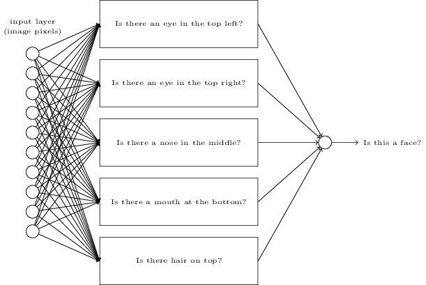
하위문제에 대한 네트워크를 분해할 수도 있다.
"왼쪽 위에 눈이 있는가?"라는 하위문제를 생각해보자.
이는 다음과 같은 물음으로 나눌 수 있다:
"눈썹이 있는가?",
"속눈썹이 있나?",
"홍채가 있나?"와 같은 질문으로 분해된다.
물론 이러한 질문은 "이미지의 왼쪽 위에 눈썹이 있으며, 그 아래 홍채가 있나?"와 같이 위치에 대한 정보를 가지고 있어야 하지만 간단하게 생각해보자.
"이미지의 왼쪽 위에 눈이 있나?"라는 질문에 대한 뉴럴 네트워크는 다음과 같이 분해될 수 있다.

이런 질문도 더 많은 층을 이용해 계속해서 나눌 수 있다.
결국 뉴럴 네트워크가 하위문제에 대해 답하는 것은 매우 간단해지며 픽셀 수준에서 쉽게 답할 수 있을 정도가 된다.
예를 들어 이 질문은 이미지의 한 부분에서 어떤 단순한 모양의 존재 유무를 문제가 된다.
이미지의 픽셀에 연결된 하나의 뉴런이 이러한 질문에 답할 수 있다.
결과적으로 복잡한 문제를 하나의 픽셀 수준에서 답할 수 있는 매우 간단한 문제로 나눈다. 이는 여러 개의 층으로 이루어진 뉴럴 네트워크를 통해 구현할 수 있으며, 앞부분에 있는 층은 입력 이미지에 대한 단순하고 구체적인 질문에 답하고, 뒤에 있는 층은 더 복잡하고 추상적인 개념에 대한 계층 구조를 형성한다. 두 개 이상의 은닉층을 가지는 이러한 다층 구조의 뉴럴 네트워크를 딥뉴럴 네트워크deep neural network(심층 신경망)라 한다.
물론, 어떻게 재귀적으로 하위 문제로 분해하는지 설명하지는 않았다. 직접 뉴럴 네트워크의 가중치와 편향을 설계하는 방법은 실용적이지 않다. 대신, 뉴럴 네트워크가 자동으로 가중치와 편향을 학습할 수 있도록 학습 알고리즘을 사용한다 - 즉 학습 데이터에서 개념에 대한 계층 구조를 학습한다. 1980년대와 90년대의 연구자들은 딥뉴럴 네트워크를 학습시키기 위해, 확률적 경사 하강법과 역전파 알고리즘을 사용했다. 하지만 특수한 몇몇 구조를 제외하고는 좋은 성과를 내지 못했다. 뉴럴 네트워크가 학습을 하지만 매우 느렸으며, 실용적으로 사용할 수 없을 정도였다.
2006년 이후, 딥뉴럴 네트워크를 학습시킬 수 있는 몇몇 기술이 개발되었다. 확률적 경사 하강 알고리즘과 역전파 알고리즘을 기반으로 한 이 딥러닝deep learning 기술은 새로운 아이디어를 도입했다. 이 새로운 시술의 도입으로 훨씬 더 (크고) 깊은 뉴럴 네트워크를 학습시킬 수 있었다. 현재 사람들은 5개에서 10개의 은닉층으로 구성된 뉴럴 네트워크를 훈련시키고 있다. 그리고 단 하나의 은닉층으로 구성된 얕은 뉴럴 네트워크shallow neural network보다 딥뉴럴 네트워크의 성능이 훨씬 좋다는 것이 밝혀졌다. 물론, 딥뉴럴 네트워크가 어떤 개념에 대한 복잡한 계층 구조를 만들 수 있는 능력이 있기 때문이다. 이는 전통적인 프로그래밍 언어programming language가 모듈식 디자인modular design과 추상화abstraction에 대한 아이디어를 이용해, 복잡한 프로그램을 만들 수 있었던 것과 비슷하다. 딥뉴럴 네트워크와 얕은 뉴럴 네트워크의 관계는 함수를 호출할 수 있는 프로그래밍 언어와 함수를 호출할 수 없는 프로그래밍 언어 사이의 관계와 닮아 있다. 전통적인 프로그래밍에서의 추상화와 뉴럴 네트워크에서의 추상화는 엄연히 다르지만, 마찬가지로 중요하다.
Deep Learning, book by Ian Goodfellow, Yoshua Bengio, and Aaron Courville
한글 글꼴(korean fonts): 나눔 글꼴
In academic work,
please cite this book as: Michael A. Nielsen, "Neural Networks and
Deep Learning", Determination Press, 2015
This work is licensed under a
Creative Commons Attribution-NonCommercial 3.0 Unported License
. This means you're free to copy, share, and
build on this book, but not to sell it. If you're interested in
commercial use, please contact me(Michael A. Nielsen).
Last update: Tue Jun 11 16:58:53 2019
학업적으로 이용 시 다음과 같이 인용해 주세요: Michael A. Nielsen, "Neural Networks and
Deep Learning", Determination Press, 2015

이 저작물은
크리에이티브 커먼즈 저작자표시-비영리 3.0 Unported 라이선스
에 따라 이용할 수 있습니다.
상업적 이용을 원하면, 저자(Michael A. Nielsen)에게 연락을 주세요.
마지막 깁고 더함: 19/06/21